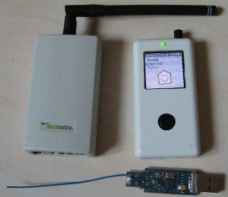
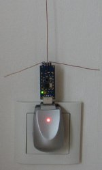

Contents
-
Introduction
Fhem command types
Device specification
fhem commands
-
attr
CULflash
createlog
define
delete
deleteattr
get
getstate
?,help
include
inform
jsonlist
list
modify
quit
reload
rename
rereadcfg
save
set
setdefaultattr
setstate
shutdown
sleep
trigger
updatefhem
usb
xmllist
Devices
-
global
ALL3076 ALL4000T ALL4027 BS CM11 CUL CUL_EM CUL_FHTTK CUL_HM CUL_HOERMANN CUL_IR CUL_RFR CUL_TX CUL_WS ECMD ECMDDevice DS18S20 EIB EnOcean EM EMEM EMGZ EMWZ ESA2000 FHT FHT8V FHZ FS20 HMS HMLAN IPWE IT ITACH_RELAY KM271 KS300 LGTV LIRC M232 M232Counter M232Voltage NetIO230B OREGON OWFS OWTEMP RFXCOM RFXMETER RFXX10REC RSS SCIVT SISPM SIS_PMS TCM TellStick TRX TRX_LIGHT TRX_SECURITY TRX_WEATHER TUL Twilight USF1000 USBWX VantagePro2 Weather WEBCOUNT WEBIO WEBIO_12DIGITAL WOL WS2000 WS300 WS3600 X10 xxLG7000
Helper modules
-
DbLog
FHEM2FHEM
FHEMRENDERER
FHEMWEB
FLOORPLAN
FileLog
PachLog
PID
SUNRISE_EL
at
autocreate
average
dummy
dumpdef
holiday
notify
sequence
structure
watchdog
weblink
Perl specials
gnuplot file syntax
Introduction
-
Fhem is mainly used for home automation, but it is suitable for other tasks
too, where notification, timers and logging plays an important role.
It supports different hardware devices to interface with certain protocols (e.g. FHZ1000 to interface FS20 and HMS, CM11 to access X10), and logical devices like FS20 or FHT to digest the messages for a certain device type using this protocol.
Fhem is modular. The different devices are represented through modules which implement certain functions (e.g. define, get, set). Even seemingly integral parts of fhem like triggers (notify) and timers (at) are implemented this way, giving the possibility to replace/extend this functionality.
Fhem is controlled through readable / ascii commands, which are specified in files (e.g. the configuration file), or issued over a TCP/IP connection, either directly in a telnet session, with a fhem.pl in client mode or from one of the web frontends.
When starting the server you have to specify a configuration file:
fhem.pl ~/.fhem
A minimal configuration file:
attr global logfile /tmp/fhem.log
attr global statefile /tmp/fhem.save
attr global verbose 3
attr global port 7072
attr global modpath /usr/share/fhem
define FHZ FHZ /dev/tts/USB0
define lamp FS20 8765 01
For other configuration files see the examples subdirectory.TCP/IP communication with fhem can either happen in a "session" (via telnet) or single client command (via fhem.pl). Example:
telnet localhost 7072
<NL> (This newline switches into "prompt" mode)
<command>...
quitfhem.pl 7072 "set lamp off"
Fhem command types
-
There are three types of commands: "fhem" commands (described in this
document), shell commands (they must be enclosed in double quotes ") and perl
expressions (enclosed in curly brackets {}). shell commands or perl expressions
are needed for complex at or notify
arguments, but can also issued as a "normal" command.
E.g. the following three commands all do the same when issued from a telnet prompt:
-
set lamp off
"fhem.pl 7072 "set lamp off""
{fhem("set lamp off")}
Shell commands will be executed in the background, perl expressions and fhem commands will be executed in the main "thread". In order to make perl expressions easier to write, some special functions and variables are available. See the section Perl special for a description. To trigger fhem commands from a shell script (this is the "other way round"), use the client form of fhem.pl (described above).
Multiple fhem commands are separated by semicolon (;). In order to use semicolon in perl code or shell programs, they have to be escaped by the double semicolon (;;). See the Notes section of the notify chapter on command parameters and escape rules.
E.g. the following first command switches Lamp1 off at 07:00 and Lamp2 immediately (at the point of definition), the second one switches both lamps off at 07:00.
-
define lampoff at 07:00 set Lamp1 off; set Lamp2 off
define lampoff at 07:00 set Lamp1 off;; set Lamp2 off
Commands can be either typed in plain, or read from a file (e.g. the configuration file at startup). The commands are either executed directly, or later if they are arguments to the at and notify fhem commands.
A line ending with \ will be concatenated with the next one, so long lines (e.g. multiple perl commands) can be split in multiple lines. Some web fronteds (e.g. webpgm2) make editing of multiline commands transparent for you (i.e. there is no need for \) .
Device specification (devspec)
-
The commands
attr,
deleteattr,
delete,
get,
list,
set,
setstate,
trigger
can take a more complex device specification as argument, which will be
expanded to a list of devices. A device specification (short devspec) can be:
- a single device name. This is the most common case.
- a list of devices, separated by comma (,)
- a range of devices, separated by dash (-)
- a regular expression, if the the spec contains on e of the following characters: ^*[]$
- an attribute of the device, followed by an equal sign (=) and then a regexp for this attribute. As attribute you can specify either attributes set with the attr command or one of the "internal" attributes DEF, STATE and TYPE.
- first the spec is separated by komma, then the range or the regular expression operations are executed.
- if there is a device which exactly corresponds to the spec, then no special processing is done.
- the returned list can contain the same device more than once, so "set lamp1-lamp3,lamp3 on" switches lamp3 twice.
- for more complex structuring demands see the structure device.
set lamp1 onset lamp1,lamp2,lamp3 onset lamp[1-3] onset lamp.* onset lamp1-lamp3 onset lamp1-lamp3,lamp3 onset room=kitchen offlist disabled=list TYPE=FS20?, help
?helpGet a list of all commands and short description for each one
attr
- comment
Add an arbitrary comment. - room
Filter/group devices. Recognized by web-pgm2 and web-pgm3. A device can appear in more than one room, in this case the rooms have to be specified komma separated.
Devices in the room hidden will not appear in the web output, or set the FHEMWEB attribute to selectively disable rooms for certain FHEMWEB instances. - showtime
Used in the webfrontend pgm2 to show the time of last activity instead of the state in the summary view. Useful e.g. for FS20 PIRI devices. - See deleteattr to delete attributes.
attr <devspec> <attrname> [<value>] Set an attribute for a device defined by define. You can define your own attributes too to use them in other applications. Use "attr <name> ?" to get a list of possible attributes. See the Device specification section for details on <devspec>.
Attributes used by all devices:
Device specific attributes are documented in the corresponding device section.
Examples:
attr global verbose 3attr lamp room kitchenattr lamp loglevel 6Notes:
setdefaultattr
- There is no way to delete a single default-attribute from the list
setdefaultattr [<attrname> [<value>]] Add a default attribute. Each device defined from now on will receive this attribute.
If no attrname is specified, then the default attribute list will be deleted.
Example to set the attribute "room kitchen" and "loglevel 4" to each of the lamps:
setdefaultattr room kitchensetdefaultattr loglevel 4define lamp1 FS20 1234 11define lamp2 FS20 1234 12define lamp3 FS20 1234 13setdefaultattrNotes:
define
define <name> <type> <type-specific>Define a device. You need devices if you want to manipulate them (e.g. set on/off), and the logfile is also more readable if it contains e.g. "lamp off" instead of "Device 5673, Button 00, Code 00 (off)".
Use "define <name> ?" to get a list of possible types.
After definition, the global event "DEFINED" will be generated, see the notify section for details.
Each device takes different additional arguments at definition, see the corresponding device section for details.
deleteattr
deleteattr <devspec> [<attrname>] Delete either a single attribute (see the attr command) or all attributes for a device (if no <attrname> is defined). See the Device specification section for details on <devspec>.
Examples:
deleteattr lamp follow-on-for-timerdeleteattr lampdelete
delete <devspec> Delete something created with the define command. See the Device specification section for details on <devspec>.
After deletion, the global event "DELETED" will be generated, see the notify section for details.
Examples:
delete lampget
get <devspec> <type-specific>
Ask a value directly from the device, and wait for an answer. In general, you can get a list of possible parameters by
get <device> ?
Each device has different get parameters, see the corresponding device section for details.
getstate
getstate <devspec>
Output a short space seperated status for <devspec>. It is useful for monitoring the device in e.g. Cacti.
Examples:
getstate lamp
state:1
getstate fl
ack:0 actuator:2 day-temp:21.5 desired-temp:22.5 [...] measured-temp:22.9 [...]
include
include <filename> Read in the file, and process every line as a fhem command. Makes configuration files more modular and enables to reread them.
inform
inform {on|off|timer|raw} [regexp] If set to on, and a device state changes, send a notification to the current client. This command can be used by other programs/modules to receive a notification.
The option timer prepends a timerstamp to the line. Note: this command is a nice way to check which events are generated, to help you when creating notify or FileLog entries.
jsonlist
jsonlist [<devspec>|<typespec>|ROOMS]
Returns an JSON tree of all definitions, all notify settings and all at entries if no parameter is given. Can also be called via HTTP by http://fhemhost:8083/fhem?cmd=jsonlist&XHR=1
Example:
fhem> jsonlist
{
"ResultSet": "full",
"Results": [
{
"list": "Global",
"devices": [
{
"DEF": "",
"NAME": "global",
"NR": "1",
"STATE": "",
"TYPE": "Global",
"currentlogfile": "/var/log/fhem/fhem-2011-12.log",
"logfile": "/var/log/fhem/fhem-%Y-%m.log",
"ATTR": {
"configfile": "/etc/fhem/fhem.conf",
"logfile": "/var/log/fhem/fhem-%Y-%m.log",
"modpath": "/usr/share/fhem",
"pidfilename": "/var/run/fhem.pid",
"port": "7072 global",
"room": "Server",
"statefile": "/var/cache/fhem/fhem.save",
"verbose": "4",
"version": "=VERS= from =DATE= ($Id: fhem.pl,v $)"
},
"READINGS": []
}
]
},
{
"list": "CM11",
"devices": [
{
"DEF": "/dev/cm11",
"DeviceName": "/dev/cm11",
"FD": "14",
"NAME": "CM11",
"NR": "19",
"PARTIAL": "null",
"STATE": "Initialized",
"TYPE": "CM11",
"ATTR": {
"model": "CM11"
},
"READINGS": []
}
]
},
{
[...placeholder for more entrys...]
},
],
"totalResultsReturned": 235
}
<devspec>, then a detailed status for
<devspec> will be displayed, e.g.:
fhem> jsonlist lamp1
{
"ResultSet": {
"Results": {
"ATTRIBUTES": {
"alias": "Lamp on Sideboard",
"model": "fs20st",
"room": "Livingroom"
},
"BTN": "01",
"CHANGED": "ARRAY",
"CHANGETIME": "ARRAY",
"CODE": {
"1": "0b0b 01",
"2": "0b0b 0f",
"3": "0b0b f0",
"4": "0b0b ff"
},
"DEF": "12341234 1112 lm 1144 fg 4411 gm 4444",
"IODev": "CUN868",
"NAME": "lamp1",
"NR": "155",
"READINGS": {
"state": {
"TIME": "2011-12-01 16:23:01",
"VAL": "on"
}
},
"STATE": "on",
"TYPE": "FS20",
"XMIT": "0b0b"
}
}
}
<typespec>, then a list with the status for
the defined <typespec> devices will be displayed, e.g.:
fhem> jsonlist HMS
{
"ResultSet": "devices#HMS",
"Results": [
{
"name": "KG.ga.WD.01",
"state": "Water Detect: off"
},
{
"name": "KG.hz.GD.01",
"state": "Gas Detect: off"
},
{
"name": "KG.k1.TF.01",
"state": "T: 16.6 H: 51.2 Bat: ok"
},
{
"name": "NN.xx.RM.xx",
"state": "smoke_detect: off"
}
],
"totalResultsReturned": 4
}
ROOMS, then a list with the defined rooms
will be displayed, e.g.:
fhem> jsonlist ROOMS
{
"ResultSet": "rooms",
"Results": [
"Bathroom",
"Bedroom",
"Children",
"Diningroom",
"Garden",
"House",
"Livingroom",
"Office",
"hidden"
],
"totalResultsReturned": 15
}
updatefhem
- backupdir
A folder where updatefhem will store the compressed backup file. Note: this is a global attribute.
Example:-
attr global backupdir /Volumes/BigHD
updatefhem [backup] [filename] Update the fhem modules and documentation from a nightly SVN chekout. For this purpose fhem contacts http://fhem.de/fhemupdate, compares the stored timestamps of the local files with the filelist on the server, and downloads the files changed on the server. For all downloaded modules a reload will be scheduled if the corresponding module is loaded.
If an explicit filename is given, then only this file will be downloaded.
Note: if the main program (fhem.pl) is changed, a manual restart of fhem will be necessary to apply the changes.
If backup is specified, then the complete FHEM directory (containing the modules and .gplot files) will be saved into a .tar.gz file with a timestamp in the modpath/FHEM.backup directory or to a directory specified by the backupdir global attribute. Note: tar and gzip must be installed to use this feature.
Attributes
CULflash
CULflash <CUL-Name> <CUL-Version> Download the CUL firmware from a nightly SVN chekout and flash the hardware. Currently only the CUL is supported with its versions: CUL_V2, CUL_V2_HM, CUL_V3, CUL_V4.
Note: dfu-programmer has to be installed in the path, this is already the case with the Fritz!Box 7390 image from fhem.de
If the CUL is not yet flashed, then specify "none" as CUL-Name. Example:
CULflash CUL CUL_V3
CULflash none CUL_V3
list
list [devspec] [value]
Output a list of all definitions, all notify settings and all at entries. This is one of the few commands which return a string in a normal case. See the Device specification section for details on <devspec>.
If value is specified, then output this property (like DEF, TYPE, etc) or reading (actuator, measured-temp) for all devices from the devspec.
Example:
fhem> list
Type list for detailed info.
Internal:
global (Internal)
FHZ:
FHZ (fhtbuf: 23)
FS20:
Btn4 (on-old-for-timer)
Roll1 (on)
Stehlampe (off)
FHT:
fl (measured-temp: 21.1 (Celsius))
KS300:
out1 (T: 2.9 H: 74 W: 2.2 R: 8.2 IR: no)
at:
at_rollup (Next: 07:00:00)
notify:
ntfy_btn4 (active)
FileLog:
avglog (active)
name, then a detailed status for name
will be displayed, e.g.:
fhem> list fl
Internals:
CODE 5102
DEF 5102
NAME fl
NR 15
STATE measured-temp: 21.1 (Celsius)
TYPE FHT
IODev FHZ
Attributes:
room Heizung
Readings:
2006-11-02 09:45:56 actuator 19%
[...]
modify
modify <name> <type-dependent-options>
Used to modify some definitions. Useful for changing some at or notify definitions. If specifying one argument to an at type definition, only the time part will be changed. In case of a notify type definition, only the regex part will be changed. All other values (state, attributes, etc) will remain intact.
Example:
define lampon at 19:00 set lamp onmodify lampon *19:00modify lampon 19:00 set lamp on-for-timer 16quit
quit
If used in a TCP/IP session, terminate the client session.
If used in a script, terminate the parsing of the current script.
Example:
quit
reload
reload <module>
Reload the given module from the module directory. It is a convenient way to test modules whithout restarting the program.
Example:
reload 99_PRIV
rename
rename <oldname> <newname>
Rename a device from the <oldname> to <newname>, together with its attributes. The global event RENAMED will be generated, see the notify section for details.
Example:
rename FHT_1234 fht.kitchen
rereadcfg
rereadcfg
Re-read the configuration file. Note: The statefile will be saved first, then the config file will be read (all devices will be initialized again), and at last the statefile will be reloaded. It triggers upon completion the global:REREADCFG event.
Example:
rereadcfg
save
- save only writes out definitions and attributes, but no (set/get) commands which were previously part of the config file. If you need such commands after the initialization (e.g. FHTcode), you should trigger them via notify, when receiving the INITIALIZED event.
- save tries to preserve comments (lines starting with #) and include structures, but it won't work correctly if some of these files are not writeable.
save [<configfile>]
Save first the statefile, then the configfile information. If a parameter is specified, it will be used instead the global configfile attribute.
Notes:
set
set <devspec> <type-specific>
Set parameters of a device / send signals to a device. You can get a list of possible parameters by
set <name> ?
Each device has different set parameters, see the corresponding device section for details.
setstate
- The statefile uses another version of this command, don't be surprised.
setstate <devspec> <value>
Set the "STATE" for
<name> as shown in paranthesis in the
list command
to <value> without sending any signals to the device
itself. This command is also used in the statefile.
See the Device specification section for details on
<devspec>.
Examples:
-
setstate lamp on
shutdown
shutdown [restart]
Shut down the server (after saving the state information ). It triggers the global:SHUTDOWN event. If the optional restart parameter is specified, fhem tries to restart itself.
Example:
shutdownshutdown restart
trigger
trigger <devspec> <state>
Trigger a notify definition. See the Device specification section for details on <devspec>.
Example:
trigger btn3 on
sleep
sleep <sec>
Sleep for a given amount, millisecond accuracy.
Example:
sleep 0.5define n3 notify btn3.* set lamp toggle;;sleep 0.5;;set lamp toggle
Note: sleep followed by another command and issued in at/notify/etc is not blocking fhem.
xmllist
xmllist
Returns an XML tree of all definitions, all notify settings and all at entries. It is not intended for human consumption.
Example:
fhem> xmllist
<FHZINFO>
<internal_LIST>
<internal name="global" state="internal" sets=""
attrs="room configfile logfile ...">
<INT key="DEF" value="<no definition>"/>
<INT key="NR" value="0"/>
<INT key="STATE" value="internal"/>
[...]
Devices
global
-
The global device is used to set different global attributes. It will be
automatically defined, it cannot be deleted or renamed and has no set or get
parameters
- autoload_undefined_devices
If set, automatically load the corresponding module when a message of this type is received. This is used by the autocreate device, to automatically create a fhem device upon receiving a corresponding message. - allowfrom
Comma (,) separated list of ip-addresses or hostnames. If set, only connections from these addresses are allowed. - configfile
Contains the name of the fhem configuration file. If save is called without argument, then the output will be written to this file. - holiday2we
If this attribute is set, then the $we variable will be true, if the value of the holiday variable referenced by this attribute is not none.
Example:
-
attr global holiday2we hessen
- lastinclude
If this attribute is set, then the last command of the generated configfile (see the save command) will be
include <lastinclude-value>
This attribute is DEPRECATED, use notify, with the INITIALIZED event to execute commands after initialization. - logfile
Specify the logfile to write. You can use "-" for stdout, in this case the server won't background itself.
The logfile name can also take wildcards for easier logfile rotation, see the FileLog section. Just apply thearchivecmd / archivedir / nrarchiveattributes to theglobaldevice as you would do for a FileLog device.
You can access the current name of the logfile with{ $currlogfile }. - modpath
Specify the path to the modules directoryFHEM. The path does not contain the directory FHEM. Upon setting the attribute, the directory will be scanned for filenames of the form NN_<NAME>.pm, and make them available for device definition under <NAME>. If the first device of type <NAME> is defined, the module will be loaded, and its function with the name <NAME>_Initialize will be called. Exception to this rule are modules with NN=99, these are considered to be utility modules containing only perl helper functions, they are loaded at startup (i.e. modpath attribute definition time). - mseclog
If set, the timestamp in the logfile will contain a millisecond part. - nofork
If set and the logfile is not "-", do not try to background. Needed on some Fritzbox installations. - pidfilename
Write the process id of the perl process to the specified file. The server runs as a daemon, and some distributions would like to check by the pid if we are still running. The file will be deleted upon shutdown. - port
Listen on the TCP/IP port<number>for incoming connections. To offer at least a little bit of security, the server will only listen for connections from the localhost per default. If there is a second value "global" then the server will listen for non-localhost connections too.
To use IPV6, specify the port as IPV6:<number>, in this case the perl module IO::Socket:INET6 will be requested. On Linux you may have to install it with cpan -i IO::Socket::INET6 or apt-get libio-socket-inet6-perl; the OSX perl already has this module. - statefile
Set the filename where the state and certain at information will be saved before shutdown. If it is not specified, then no information will be saved. - title
Used by the web frontend fhemweb.pl (webpgm2) as a Page title. - userattr
A space separated list which contains the names of additional attributes. Without specifying them you will not be able to set them (in order to prevent typos). - verbose
Set the verbosity level. Possible values:- 0 - server start/stop
- 1 - error messages or unknown packets
- 2 - major events/alarms.
- 3 - commands sent out will be logged.
- 4 - you'll see whats received by the different devices.
- 5 - debugging.
- dupTimeout
Define the timeout for which 2 identical events from two different receiver are considered a duplicate. Default is 0.5 seconds.
Define
- N/A
Set
- N/A
Get
- N/A
Attributes
FHZ
-
Note: this module requires the Device::SerialPort or Win32::SerialPort module
if the devices is connected via USB or a serial port.
- raw is used to send out "raw" FS20/FHT messages ("setters" only - no query messages!). See message byte streams in FHEM/00_FHZ.pm and the doc directory for some examples.
- In order to set the time of your FHT's, schedule this command every
minute:
define fhz_timer at +*00:01:00 set FHZ time
See the loglevel to prevent logging of this command. - FHTcode is a two digit hex number (from 00 to 63?) and sets the central FHT code, which is used by the FHT devices. After changing it, you must reprogram each FHT80b with: PROG (until Sond appears), then select CEnt, Prog, Select nA.
- If the FHT ceases to work for FHT devices whereas other devices
(e.g. HMS, KS300) continue to work, a
set FHZ initfullset FHZ reopen initfullissues the initialization sequence for the FHZ device:
get FHZ init2 get FHZ serial set FHZ initHMS set FHZ initFS20 set FHZ time set FHZ raw 04 01010100010000reopencloses and reopens the serial device port. This implicitly initializes the FHZ and issues theinitfullcommand sequence.stopHMSprobably is the inverse ofinitHMS(I don't have authoritative info on what exactly it does).closecloses and frees the serial device port until you open it again withopen, e.g. useful if you need to temporarily unload the ftdi_sio kernel module to use the bit-bang mode.- The mentioned codes are needed for initializing the FHZ1X00
- The answer for a command is also displayed by
list FHZ -
The FHZ1x00PC has a message buffer for the FHT (see the FHT entry in
the set section). If the buffer is full, then newly
issued commands will be dropped, if the attribute fhtsoftbuffer is not set.
fhtbufreturns the free memory in this buffer (in hex), an empty buffer in the FHZ1000 is 2c (42 bytes), in the FHZ1300 is 4a (74 bytes). A message occupies 3 + 2x(number of FHT commands) bytes, this is the second reason why sending multiple FHT commands with one set is a good idea. The first reason is, that these FHT commands are sent at once to the FHT. - do_not_notify
Disable FileLog/notify/inform notification for a device. This affects the received signal, the set and trigger commands. - dummy
- showtime
- loglevel
Set the device loglevel to e.g. 6 if you do not wish messages from a given device to appear in the global logfile (FHZ/FS20/FHT). E.g. to set the FHT time, you should schedule "set FHZ time" every minute, but this in turn makes your logfile unreadable. These messages will not be generated if the FHZ attribute loglevel is set to 6. - model (fhz1000,fhz1300)
- fhtsoftbuffer
As the FHZ command buffer for FHT devices is limited (see fhtbuf), and commands are only sent to the FHT device every 120 seconds, the hardware buffer may overflow and FHT commands get lost. Setting this attribute implements an "unlimited" software buffer.
Default is disabled (i.e. not set or set to 0).
Define
define <name> FHZ <serial-device> Specifies the serial port to communicate with the FHZ1000PC or FHZ1300PC. The name(s) of the serial-device(s) depends on your distribution.
If the serial-device is called none, then no device will be opened, so you can experiment without hardware attached.
The program can service multiple devices, FS20 and FHT device commands will be sent out through the last FHZ device defined before the definition of the FS20/FHT device. To change the association, use the IODev attribute.
For GNU/Linux you may want to read our hints for GNU/Linux about multiple USB devices.
Note:The firmware of the FHZ1x00 will drop commands if the airtime for the last hour would exceed 1% (which corresponds roughly to 163 commands). For this purpose there is a command counter for the last hour (see list FHZDEVICE), which triggers with "TRANSMIT LIMIT EXCEEDED" if there were more than 163 commands in the last hour.
If you experience problems (for verbose 4 you get a lot of "Bad CRC message" in the log), then try to define your device as
define
<name> FHZ <serial-device> strangettySet
set FHZ <variable> [<value>]
where
value is one of:-
FHTcode
initFS20
initHMS
stopHMS
initfull
raw
open
reopen
close
time
Get
get FHZ <value>
where
value is one of:-
init1
init2
init3
serial
fhtbuf
Attributes
FS20
-
The FS20 protocol is used by a wide range of devices, which are either of
the sender/sensor category or the receiver/actuator category. The radio
(868.35 MHz) messages are either received through an FHZ
or an CUL device, so this must be defined first.
<housecode>is a 4 digit hex or 8 digit ELV4 number, corresponding to the housecode address.<button>is a 2 digit hex or 4 digit ELV4 number, corresponding to a button of the transmitter.- The optional
<fgaddr>specifies the function group. It is a 2 digit hex or 4 digit ELV address. The first digit of the hex address must be F or the first 2 digits of the ELV4 address must be 44. - The optional
<lmaddr>specifies the local master. It is a 2 digit hex or 4 digit ELV address. The last digit of the hex address must be F or the last 2 digits of the ELV4 address must be 44. - The optional gm specifies the global master, the address must be FF if defined as hex value or 4444 if defined as ELV4 value.
Define
define <name> FS20 <housecode> <button>
[fg <fgaddr>] [lm <lmaddr>] [gm FF]
The values of housecode, button, fg, lm, and gm can be either defined as hexadecimal value or as ELV-like "quad-decimal" value with digits 1-4. We will reference this ELV-like notation as ELV4 later in this document. You may even mix both hexadecimal and ELV4 notations, because FHEM can detect the used notation automatically by counting the digits.
Examples:
define lamp FS20 7777 00 fg F1 gm Fdefine roll1 FS20 7777 01define otherlamp FS20 24242424 1111 fg 4412 gm 4444define otherroll1 FS20 24242424 1114
Set
set <name> <value> [<time>]
where
value is one of:
dim06% dim12% dim18% dim25% dim31% dim37% dim43% dim50%
dim56% dim62% dim68% dim75% dim81% dim87% dim93% dim100%
dimdown
dimup
dimupdown
off
off-for-timer
on # dimmer: set to value before switching it off
on-for-timer # see the note
on-old-for-timer # set to previous (before switching it on)
ramp-on-time # time to reach the desired dim value on dimmers
ramp-off-time # time to reach the off state on dimmers
reset
sendstate
timer
toggle # between off and previous dim val
on-till # Special, see the note
Examples:
set lamp onset lamp1,lamp2,lamp3 onset lamp1-lamp3 onset lamp on-for-timer 12Notes:
- Use reset with care: the device forgets even the housecode.
- As the FS20 protocol needs about 0.22 seconds to transmit a sequence, a pause of 0.22 seconds is inserted after each command.
- The FS20ST switches on for dim*%, dimup. It does not respond to sendstate.
- If the timer is set (i.e. it is not 0) then on, dim*, and *-for-timer will take it into account (at least by the FS20ST).
- The
timeargument ranges from 0.25sec to 4 hours and 16 minutes. As the time is encoded in one byte there are only 112 distinct values, the resolution gets coarse with larger values. The program will report the used timeout if the specified one cannot be set exactly. The resolution is 0.25 sec from 0 to 4 sec, 0.5 sec from 4 to 8 sec, 1 sec from 8 to 16 sec and so on. If you need better precision for large values, use at which has a 1 sec resolution. - If the attribute follow-on-for-timer is set for the device and the on-for-timer command is sent to the device with a time parameter, the program automatically schedules a "setstate off" for the specified time.
- on-till requires an absolute time in the "at" format (HH:MM:SS, HH:MM or { <perl code> }, where the perl-code returns a time specification). If the current time is greater than the specified time, then the command is ignored, else an "on" command is generated, and for the given "till-time" an off command is scheduleld via the at command.
Get
- N/A
Attributes
- IODev
Set the IO or physical device which should be used for sending signals for this "logical" device. An example for the physical device is an FHZ or a CUL. Note: Upon startup fhem assigns each logical device (FS20/HMS/KS300/etc) the last physical device which can receive data for this type of device. The attribute IODev needs to be used only if you attached more than one physical device capable of receiving signals for this logical device. - eventMap
Replace event names and set arguments. The value of this attribute consists of a list of space separated values, each value is a colon separated pair. The first part specifies the "old" value, the second the new/desired value. If the first character is slash(/) or komma(,) then split not by space but by this character, enabling to embed spaces. Examples:attr store eventMap on:open off:closed
attr store eventMap /on-for-timer 10:open/off:closed/
set store open - do_not_notify
- dummy
Set the device attribute dummy to define devices which should not output any radio signals. Associated notifys will be executed if the signal is received. Used e.g. to react to a code from a sender, but it will not emit radio signal if triggered in the web frontend. - follow-on-for-timer
the program automatically schedules a "setstate off" for the time specified as argument to the on-for-timer command (for the specified device only). - loglevel
- showtime
- model
The model attribute denotes the model type of the device. The attributes will (currently) not be used by the fhem.pl directly. It can be used by e.g. external programs or web interfaces to distinguish classes of devices and send the appropriate commands (e.g. "on" or "off" to a fs20st, "dim..%" to fs20du etc.). The spelling of the model names are as quoted on the printed documentation which comes which each device. This name is used without blanks in all lower-case letters. Valid characters should bea-z 0-9and-(dash), other characters should be ommited. Here is a list of "official" devices:
Sender/Sensor: fs20fms fs20hgs fs20irl fs20kse fs20ls fs20pira fs20piri fs20piru fs20s16 fs20s20 fs20s4 fs20s4a fs20s4m fs20s4u fs20s4ub fs20s8 fs20s8m fs20sd fs20sn fs20sr fs20ss fs20str fs20tc1 fs20tc6 fs20tfk fs20tk fs20uts fs20ze
Dimmer: fs20di fs20di10 fs20du
Receiver/Actor: fs20as1 fs20as4 fs20ms2 fs20rgbsa fs20rst fs20rsu fs20sa fs20sig fs20sm4 fs20sm8 fs20st fs20su fs20sv fs20ue1 fs20usr fs20ws1 - ignore
Ignore this device, e.g. if it belongs to your neighbour. The device won't trigger any FileLogs/notifys, issued commands will silently ignored (no RF signal will be sent out, just like for the dummy attribute). The device won't appear in the list command (only if it is explicitely asked for it), nor will it appear in commands which use some wildcard/attribute as name specifiers (see devspec). You still get them with the "ignored=1" special devspec.
Generated events:
-
From an FS20 device you can receive one of the following events.
- on
- off
- toggle
- dimdown
- dimup
- dimupdown
- on-for-timer Which event is sent is device dependent and can sometimes configured on the device.
FHT
-
Fhem can receive FHT radio (868.35 MHz) messages either through an FHZ or an CUL device, so this must be
defined first.
Define
define <name> FHT <housecode>
<housecode> is a four digit hex number,
corresponding to the address of the FHT80b device.
Examples:
define wz FHT 3232See the FHT section in set for more.
Set
set <name> <valuetype> <value>
where
value is one of:
desired-temp
day-temp night-temp
report1 report2
refreshvalues
mode
holiday1 holiday2 # Not verified
manu-temp # No clue what it does.
year month day hour minute
time date
lowtemp-offset # Alarm-Temp.-Differenz
windowopen-temp
mon-from1 mon-to1 mon-from2 mon-to2
tue-from1 tue-to1 tue-from2 tue-to2
wed-from1 wed-to1 wed-from2 wed-to2
thu-from1 thu-to1 thu-from2 thu-to2
fri-from1 fri-to1 fri-from2 fri-to2
sat-from1 sat-to1 sat-from2 sat-to2
sun-from1 sun-to1 sun-from2 sun-to2
Examples:
set wz desired-temp 22.5set fl desired-temp 20.5 day-temp 19.0 night-temp 16.0Notes:
- Following events are reported (more or less regularly) by each FHT
device:
measured-temp actuator actuator1...actuator8 warnings
You can use these strings for notify or FileLog definitions.- warnings can contain following strings: none, Battery low,Temperature too low, Window open, Fault on window sensor
- actuator (without a suffix) stands for all actuators.
- actuator or actuator1..8 can take following values:
- <value>%
This is the normal case, the actuator is instructed to open to this value. - offset <value>%
The actuator is running with this offset. - lime-protection
The actuator was instructed to execute the lime-protection procedure. - synctime
If you select Sond/Sync on the FHT80B, you'll see a count down. - test
The actuator was instructed by the FHT80b to emit a beep. - pair
The the FHT80b sent a "you-belong-to-me" to this actuator.
- <value>%
- The FHT is very economical (or lazy), it accepts one message from the
FHZ1x00 every 115+x seconds, where x depends on the housecode. Don't
be surprised if your command is only accepted 10 minutes later by the
device. FHT commands are buffered in the FHZ1x00/CUL till they are
sent to the FHT, see the related
fhtbufentry in thegetsection.
You can send up to 8 commands in one message at once to the FHT if you specify them all as arguments to the same set command, see the example above.
- time sets hour and minute to local time
- date sets year, month and date to local time
- refreshvalues is an alias for report1 255 report2 255
- All
*-tempvalues need a temperature as argument, which will be rounded to 0.5 Celsius.
Temperature values must between 5.5 and 30.5 Celsius. Value 5.5 sets the actuator to OFF, value 30.5 set the actuator to ON modeis one ofauto, manual, holiday or holiday_short.
If the mode is holiday, then- holiday1 sets the end-time of the holiday, in 10-minute steps
- holiday2 sets the end-day of the holiday
- holiday1 sets the absolute hour to switch back from this mode (in 10-minute steps, max 144)
- holiday2 sets the day of month to switch back from this mode
(if holiday1 exceeds 144, subtract 144 and increase holiday2 with
1).
Example:
- current date is 29 Jan, time is 18:05
- you want to switch to party mode until tomorrow 1:00
- set holiday1 to 6 (6 x 10min = 1hour) and holiday2 to 30
- The
*-from1/*-from2/*-to1/*-to2valuetypes need a time spec as argument in the HH:MM format. They define the periods, where the day-temp is valid. The minute (MM) will be rounded to 10, and 24:00 means off.
- To synchronize the FHT time and to "wake" muted FHTs it is adviseable
to schedule following command:
define fht_sync at +*3:30 set TYPE=FHT time
report1with parameter 255 requests all settings for monday till sunday to be sent. The argument is a bitfield, to request unique values add up the following:- 1: monday
- 2: tuesday
- 4: thursday
- 8: wednesday
- 16: friday
- 32: saturday
- 64: sunday
Note: This command generates a lot of RF traffic, which can lead to further problems, especially if the reception is not clear.
report2with parameter 255 requests the following settings to be reported: day-temp night-temp windowopen-temp lowtemp-offset desired-temp measured-temp mode warnings. The argument is (more or less) a bitfield, to request unique values add up the following:- 1: warnings
- 2: mode
- 4: day-temp, night-temp, windowopen-temp
- 64: lowtemp-offset
lowtemp-offsetneeds a temperature as argument, valid values must be between 1.0 and 5.0 Celsius.
It will trigger a warning ifdesired-temp - measured-temp > lowtemp-offsetin a room for at least 1.5 hours after the last desired-temp change.
- FHEM optionally has an internal software buffer for FHT devices.
This buffer should prevent transmission errors. If there is no
confirmation for a given period, FHEM resends the command. You can
see the queued commands with list
<fht-device>.
See the fhtsoftbuffer,
retrycount and
minfhtbuffer attributes for details.
- If a buffer is still in the softbuffer, it will be sent in the
following order:
desired-temp,mode,report1,report2, holiday1,holiday2,day-temp,night-temp, [all other commands]
Get
- N/A
Attributes
- ignore
- do_not_notify
- dummy
Note:It makes sense to define an FHT device even for an FHT8b, else you will receive "unknown FHT device, please define one" message for each FHT8b as the CUL is reporting the 8b valve messages. But you should set the dummy attribute for these devices, else the internal FHT buffer of the CUL will be filled with data for the 8b's which is never consumed. If the buffer is full, you'll get "EOB" messages from the CUL, and you cannot transmit any data to the 80b's - loglevel
- model (fht80b)
- showtime
- IODev
- eventMap
- retrycount
If the fhtsoftbuffer attribute is set, then resend commandsretrycounttimes if after 240 seconds no confirmation message is received from the corresponding FHT device.
Default is 3. - minfhtbuffer
FHEM won't send commands to the FHZ if its fhtbuffer is below this value, default is 0. If this value is low, then the ordering of fht commands (see the note in the FHT section of set) has little effect, as only commands in the softbuffer can be prioritized. The maximum value should be 7 below the hardware maximum (see fhtbuf). - lazy
If the lazy attribute is set, FHEM won't send commands to the FHT if the current reading and the value to be set are already identical. This may help avoiding conflicts with the max-1%-time-on-air rule in large installations. Not set per default. - tmpcorr
Correct the temperature reported by the FHT by the value specified. Note: only the measured-temp value reported by fhem (used for logging) will be modified.
Generated events:
- actuator
- actuator1 actuator2 actuator3 actuator4
actuator5 actuator6 actuator7 actuator8
(sent if you configured an offset for the associated valve) - mon-from1 mon-to1 mon-from2 mon-to2
- tue-from1 tue-to1 tue-from2 tue-to2
- wed-from1 wed-to1 wed-from2 wed-to2
- thu-from1 thu-to1 thu-from2 thu-to2
- fri-from1 fri-to1 fri-from2 fri-to2
- sat-from1 sat-to1 sat-from2 sat-to2
- sun-from1 sun-to1 sun-from2 sun-to2
- mode
- holiday1 holiday2
- desired-temp
- measured-temp measured-low measured-high
- warnings
- manu-temp
- year month day hour minute
- day-temp night-temp lowtemp-offset windowopen-temp
- ack can-xmit can-rcv ack2 start-xmit end-xmit (only if the CUL is configured to transmit FHT protocol data)
FHT8V
-
Fhem can directly control FHT8V type valves via a CUL
device without an intermediate FHT. This paragraph documents one of the
building blocks, the other is the PID device.
- set <name> valve <value;>
Set the valve to the given value (in percent, from 0 to 100). - set <name> pair
Pair the valve with the CUL. - get <name> valve
Read back the valve position from the CUL FHT buffer, and convert it to percent (from 0 to 100).
Define
define <name> FHT <housecode> [IODev]
<housecode> is a four digit hex number,
and must have the following relation to the housecode of the corresponding CUL
device:
- given the CUL housecode as AABB, then this housecode must be
of the form CCBB, where CC is greater or equal to AA, but less then AA+8.
<IODev> must be specified if the last defined CUL device
is not the one to use. Usually this is done voa the IODev attribute, but as the address checked is performed
at the definition, we must use an exception here.
Examples:
define wz FHT8V 3232Set
Get
Attributes
PID
-
The PID device is a loop controller, used to set the value e.g of a heating
valve dependent of the current and desired temperature.
- set <name> factors p i d
Set the p, i and d factors, as described above. - set <name> desired <value>
Set the desired value (e.g. temperature). Note: until this value is not set, no command is issued.
Define
define <name> PID sensor[:reading:regexp] actor[:cmd:min:max] [p i d]
sensor[:reading:regexp] specifies the sensor, which is an
already defined fhem device, e.g. a S300TH temperature sensor. The reading
and regexp fields are necessary only for unknown devices (currently CUL_WS and HMS devices are "known").
Reading specifies the READINGS field of the sensor, and the regexp extracts
the number from this field. E.g. for the complete definition for a CUL_WS
device is: s300th_dev:temperature:([\d\.]*)
actor[:cmd:min:max] specifies the actor, which is an
already defined fhem device, e.g. an FHT8V valve. The cmd, min and max
fields are necessary only for unknown devices (currently FHT8V is "known"). cmd specifies the command name for the
actor, min the minimum value and max the maximum value. The complete
definition for an FHT8V device is:fht8v_dev:valve:0:100
p, i and d are the parameters use to controlling, see also the this wikipedia entry. The default values are around 25.5, 3 and 5.88, you probably need to tune these values. They can be also changed later.
Examples:
define wz_pid PID wz_th wz_fht8vSet
Get
-
N/A
Attributes
CUL_FHTTK
-
This module handles messages from the FHT80 TF "Fenster-Tür-Kontakt" (Window-Door-Contact)
which are normally only acted upon by the FHT80B. With this module,
FHT80 TFs are in a limited way (see Wiki
for detailed explanation of TF's mode of operation) usable similar to HMS100 TFK. The name
of the module was chosen as a) only CUL will spill out the datagrams and b) "TF" designates
usually temperature+humidity sensors (no clue, why ELV didn't label this one "TFK" like with
FS20 and HMS).
As said before, FHEM can receive FHT80 TF radio (868.35 MHz) messages only through an CUL device, so this must be defined first.
Define
define <name> CUL_FHTTK <devicecode>
<devicecode> is a six digit hex number, given to the FHT80 TF during
production, i. e. it is not changeable. (Yes, it keeps this code after changing batteries
as well.)Examples:
define TK_TEST CUL_FHTTK 965AB0
Set
- Nothing to set here yet ...
Get
- No get implemented yet ...
Attributes
HMS
-
Define
- There is _NO_ guarantee that the code will work as expected in all circumstances, the authors are not liable for any damage occuring as a result of incomplete or buggy code
- Currently supported devices are the HMS100-T HMS100-TF HMS100-WD HMS100-MG HMS100-TFK HMS100-CO HMS100-FIT RM100-2 RM100-3
- The housecode of the HMS devices may change if the battery is renewed.
In order to make life easier, you can define a "wildcard" device for each
type of HMS device. First the real device-id will be checked, then the
wildcard device id. The wildcards are:
- 1000 for the HMS100-TF
- 1001 for the HMS100-T
- 1002 for the HMS100-WD
- 1003 for the RM100-2
- 1004 for the HMS100-TFK/li>
- 1006 for the HMS100-MG
- 1008 for the HMS100-CO
- 100e for the HMS100-FIT
- Some battery low notifications are not yet implemented (RM100, HMS100WD).
- Please test your installation before relying on the functionality.
- ignore
- do_not_notify
- loglevel
- showtime
- IODev
- eventMap
- model (hms100-t hms100-tf hms100-wd hms100-mg hms100-co hms100-tfk hms100-fit rm100-2)
define <name> HMS <housecode>
<housecode> is a four digit hex number,
corresponding to the address of the HMS device.
Examples:
define temp HMS 1234Set
- N/A
Get
- N/A
Attributes
HMLAN
- start the fhem/contrib/tcptee.pl program
- redirect the CCU to the local host
- disable the LAN-Encryption on the CCU for the Lan configurator
- set the dummy attribute for the HMLAN device in fhem
- raw
Issue a CUL firmware command. See the this document for details on CUL commands. - freq / bWidth / rAmpl / sens
SlowRF mode only.
Set the CUL frequency / bandwidth / receiver-amplitude / sensitivity
Use it with care, it may destroy your hardware and it even may be illegal to do so. Note: the parameters used for RFR transmission are not affected.
- freq sets both the reception and transmission frequency. Note: although the CC1101 can be set to frequencies between 315 and 915 MHz, the antenna interface and the antenna of the CUL is tuned for exactly one frequency. Default is 868.3MHz (or 433MHz)
- bWidth can be set to values between 58kHz and 812kHz. Large values are susceptible to interference, but make possible to receive inaccurate or multiple transmitters. It affects tranmission too. Default is 325kHz.
- rAmpl is receiver amplification, with values between 24 and 42 dB. Bigger values allow reception of weak signals. Default is 42.
- sens is the decision boundery between the on and off values, and it is 4, 8, 12 or 16 dB. Smaller values allow reception of less clear signals. Default is 4dB.
- hmPairForSec
HomeMatic mode only.
Set the CUL in Pairing-Mode for the given seconds. Any device set into pairing mode in this time will be paired with fhem. - hmPairSerial
HomeMatic mode only.
Try to pair with the given device. The argument is a 10 character string, usually starting with letters and ending with digits, printed on the backside of the device. It is not necessary to put the given device in learning mode if it is a receiver. - led
Set the CUL led off (00), on (01) or blinking (02). - version
return the CUL firmware version - uptime
return the CUL uptime (time since CUL reset). - raw
Issue a CUL firmware command, and wait for one line of data returned by the CUL. See the CUL firmware README document for details on CUL commands. - fhtbuf
CUL has a message buffer for the FHT. If the buffer is full, then newly issued commands will be dropped, and an "EOB" message is issued to the fhem log.fhtbufreturns the free memory in this buffer (in hex), an empty buffer in the CUL-V2 is 74 bytes, in CUL-V3/CUN 200 Bytes. A message occupies 3 + 2x(number of FHT commands) bytes, this is the second reason why sending multiple FHT commands with one set is a good idea. The first reason is, that these FHT commands are sent at once to the FHT. - ccconf
Read some CUL radio-chip (cc1101) registers (frequency, bandwidth, etc), and display them in human readable form. - do_not_notify
- dummy
- showtime
- loglevel
- model (CUL,CUN,CUR)
- sendpool
If using more than one CUL/CUN for covering a large area, sending different events by the different CUL's might disturb each other. This phenomenon is also known as the Palm-Beach-Resort effect. Putting them in a common sendpool will serialize sending the events. E.g. if you have three CUN's, you have to specify following attributes:
attr CUN1 sendpool CUN1,CUN2,CUN3
attr CUN2 sendpool CUN1,CUN2,CUN3
attr CUN3 sendpool CUN1,CUN2,CUN3
- addvaltrigger
Create triggers for additional device values. Right now these are RSSI and RAWMSG for the CUL family and RAWMSG for the FHZ. - rfmode
Configure the RF Transceiver of the CUL (the CC1101). Available arguments are:- SlowRF
To communicate with FS20/FHT/HMS/EM1010/S300/Hoermann devices @1kHz datarate. This is the default. - HomeMatic
To communicate with HomeMatic type of devices @20kHz datarate
- SlowRF
- hmId
Set the HomeMatic ID of this device. If this attribute is absent, the ID will be F1<FHTID>. Note 1: after setting or changing this attribute you have to relearn all your HomeMatic devices. Note 2: the value _must_ be a 6 digit hex number, and 000000 is not valid. fhem wont complain if it is not correct, but the communication won't work. - hmProtocolEvents
Generate events for HomeMatic protocol messages. - temperature: $temp
- humidity: $hum
- for EMWZ devices you should specify the rotation speed (R/kW) of your watt-meter (e.g. 150) for corr1 and 12 times this value for corr2
- for EMEM devices the corr1 value is 0.01, and the corr2 value is 0.001
- irLearnForSec
Sets the CUL_IR device in an IR-Code Learning mode for the given seconds. Any received IR-Code will be stored as a Button attribute for this devices. The name of these attributes is dependent on the two attributes learncount and learnprefix.
Attention: Before learning IR-Codes the CUL_IR device needs to be set in IR-Receiving mode by modifying the irReceive attribute. - irSend
Sends out IR-commands via the connected IODev. The IR-command can be specified as buttonname according to Button.* or as IR-Code directly. If a buttonname is specified, the corresponding IR-Code will be sent out.
Example:
set IR-Dev irSend ButtonA001
If defining an IR-Code directly the following Code-Syntax needs to be followed:
IRCode: <PP><AAAA><CCCC><FF>
with P = Protocol; A = Address; C = Command; F = Flags
With the Flags you can modify IR-Repetition. Flags between 00-0E will produce 0-15 IR-Repetitions. You can type the IR-Code as plain as above, or with a heading "I" as learnt for the buttons.
Example:
set IR-Dev irSend 0A07070F0F02
set IR-Dev irSend I0A07070F0F00 - do_not_notify
- showtime
- loglevel
- irReceive
Configure the IR Transceiver of the <IODev> (the CUNO1). Available arguments are:- OFF
Switching off the reception of IR signals. This is the default. - ON
Switching on the reception of IR signals. This is WITHOUT filtering repetitions. This is not recommended as many remote controls do repeat their signals. - ON_NR
Switching on the reception of IR signals with filtering of repetitions. This is the recommended modus operandi.
- OFF
- Button.*
Button.* is the wildcard for all learnt IR-Codes. IR-Codes are learnt as Button-Attributes. The name for a learnt Button - IR-Code is compiled out of three elements:
Button<learnprefix><learncount>When the CUL_IR device is set into learning mode it will generate a new button-attribute for each new IR-Code received.This is done according to the following syntax:
<Button-Attribute-Name> <IR-Code>Examples of learnt button-attributes with EMPTY <learnprefix> and <learncount> starting from 1:
Button001 I02029A000000 Button002 I02029A000001To make sure that something happens when this IR-code is received later on one has to modify the attribute and to add commands as attribute values. Examples:Button001 I02029A000000 set WZ_Lamp on Button002 I02029A000001 set Switch onThe syntax for this is:attr <device-name> <attribute-name> <IR-Code> <command> - Group.*
Group.* is the wildcard for IR-Code groups. With these attributes one can define IR-Code parts, which may match to several Button-IR-Codes.
This is done by defining group-attributes that contain only parts of the IR-Code. The syntax is:<Group-Attribute-Name> <IR-Code>Examples of a group-attribute is:
Group001 I02029AWith this all IR-Codes starting with I02029A will match the Group001. - learncount
learncount is used to store the next button-code-number that needs to be learned. By manually modifying this attribute new button sequences can be arranged. - learnprefix
learnprefix is a string which will be added to the button-attribute-name.
A button-attribute-name is constructed by:Button<learnprefix><learncount>If learnprefix is empty the button-attribute-name only contains the term "Button" and the actual number of learncount. - If the interface is a CUL device, the rfmode attribute of the corresponding CUL/CUN device must be set to HomeMatic. Note: this mode is BidCos/Homematic only, you will not receive FS20/HMS/EM/S300 messages via this device. Previously defined FS20/HMS etc devices must be assigned to a different input device (CUL/FHZ/etc).
- The protocol used by HomeMatic devices (BidCos, known as AskSin in the culfw) must be enabled in the culfw firmware. This is done for all CUN and for newer CUL (i.e. V3.0 and greater) devices with culfw firmware version 1.38 and newer. For CUL hardware version before 3.0 there is a separate firmware with HomeMatic support which lacks FHT support.
- Currently supported device families: remote, switch, dimmer, blindActuator, motionDetector, smokeDetector, threeStateSensor, THSensor, winmatic. Special devices: KS550, HM-CC-TC and the KFM100.
- Device messages can only be interpreted correctly if the device type is known. fhem will extract the device type from a "pairing request" message, even if it won't respond to it (see hmPairSerial and hmPairForSec to enable pairing). As an alternative, set the correct subType and model attributes, for a list of possible subType values see "attr hmdevice ?".
- The so called "AES-Encryption" is in reality a signing request: if it is
enabled, an actor device will only execute a received command, if a
correct answer to a request generated by the actor is received. This
means:
- Reaction to commands is noticably slower, as 3 messages are sent instead of one before the action is processed by the actor.
- Every command and its final ack from the device is sent in clear, so an outside observer will know the status of each device.
- The firmware implementation is buggy: the "toggle" event is executed before the answer for the signing request is received, at least by some switches (HM-LC-Sw1-Pl and HM-LC-SW2-PB-FM).
- The HMLAN configurator will answer signing requests by itself, and if it is configured with the 3-byte address of a foreign CCU (the address is part of the signing request), it is able to answer signing requests correctly. In the reality this will only work reliably if the foreign CCU is switched off, else it will also answer to the signing request in parallel, and the actor will not receive a clear confirmation.
- AES-Encryption is not useable with a CUL device as the interface, but it is supported with a HMLAN. Due to the issues above I do not recommend using Homematic encryption at all.
- the <6-digit-hex-code>
which is the hardcoded address of the device (no, you cannot choose it arbitrarily like for FS20 devices). You may detect it by inspecting the fhem log. - the hmClass attribute
which is either sender or receiver - the subType attribute
which is one of switch dimmer blindActuator remote sensor swi pushButton threeStateSensor motionDetector keyMatic winMatic smokeDetector
Without these attributes fhem won't be able to decode device messages appropriately. - statusRequest
Send a status request to the device. - reset
Factory reset the device. You need to pair it again to use it with fhem. - pair
Pair the device again with its known serialNumber (e.g. after a device reset). - unpair
"Unpair" the device, i.e. make it available to pair with other master devices. - sign [on|off]
Activate or deactivate signing (also called AES encryption, see the note above). Warning: if the device is attached via a CUL, you won't be able to switch it (or deactivate signing) from fhem before you reset the device directly. - switch
- on - set the switch on
- off - set the switch off
- on-for-timer sec - set the switch on for the given seconds. Note: the protocol does not support an off-for-timer like FS20.
- toggle - toggle the switch.
- dimmer, blindActuator
- 0 - 100 with a resolution of 0.5:
set the dimmer / blindActuator to the given value (in percent).
as a second optional parameter you can give the On-Time in seconds (analog "on-for-timer"). 0 means infinite
as a third optional parameter you can give the Ramp-Time in seconds (steps of 0.1) for a "slow-dim". 0 means instant. Default: 0.5 - on / off
this corresponds to 100 or 0 %. - toggle - toggle the dimmer between off and the last on-value
- on-for-timer sec - set the dimmer on for the given seconds. Redundant with 0-100 and on/off for compatability purposes
- 0 - 100 with a resolution of 0.5:
- remotes
-
devicepair
hmDevice
Pair a remote directly with a switch. The command for the switch is sent out directly, the remote must be set into learning mode first.
- 4Dis (HM-PB-4DIS-WM)
- text <btn_no> [on|off] <text1> <text2>
Set the text on the display of the device. To this purpose issue this set command first (or a number of them), and then choose from the teach-in menu of the 4Dis the "Central" to transmit the data. Example:
-
set 4Dis text 1 on On Lamp
set 4Dis text 1 off Kitchen Off
- text <btn_no> [on|off] <text1> <text2>
- Climate-Control (HM-CC-TC)
- day-temp <tmp>
night-temp <tmp>
party-temp <tmp>
desired-temp <tmp>
Set different temperatures. Temp must be between 6 and 30 Celsius, and precision is half a degree. - tempListSat HH:MM temp ... 24:00 temp
tempListSun HH:MM temp ... 24:00 temp
tempListMon HH:MM temp ... 24:00 temp
tempListTue HH:MM temp ... 24:00 temp
tempListThu HH:MM temp ... 24:00 temp
tempListWed HH:MM temp ... 24:00 temp
tempListFri HH:MM temp ... 24:00 temp
Specify a list of temperature intervals. Up to 24 intervals can be specified for each week day, the resolution is 10 Minutes. The last time spec must always be 24:00.
Example: set th tempListSat 06:00 19 23:00 22.5 24:00 19
Meaning: until 6:00 temperature shall be 19, from then until 23:00 temperature shall be 22.5, thereafter until midnight, 19 degrees celsius is desired. - displayMode [temp-only|temp-hum]
displayTemp [actual|setpoint]
displayTempUnit [celsius|fahrenheit]
controlMode [manual|auto|central|party]
decalcDay <day>
- day-temp <tmp>
- raw <data> ...
Only needed for experimentation. send a list of "raw" commands. The first command will be immediately sent, the next one after the previous one is acked by the target. The length will be computed automatically, and the message counter will be incremented if the first two charcters are ++. Example (enable AES):set hm1 raw ++A001F100001234560105000000001\ ++A001F10000123456010802010AF10B000C00\ ++A001F1000012345601080801\ ++A001F100001234560106 - eventMap
- do_not_notify
- ignore
- showtime
- loglevel
- hmClass,
model,
subType
These attributes are set automatically after a successful pairing. They are not supposed to be set by hand, and are necessary in order to correctly interpret device messages or to be able to send them. - rawToReadable
Used to convert raw KFM100 values to readable data, based on measured values. E.g. fill slowly your container, while monitoring the values reported with inform. You'll see:-
10 (at 0%)
50 (at 20%)
79 (at 40%)
270 (at 100%)
- unit
set the reported unit by the KFM100 if rawToReadable is active. E.g.
attr KFM100 unit Liter - KS550/HM-WDS100-C6-O:
T: $t H: $h W: $w R: $r IR: $ir WD: $wd WDR: $wdr S: $s B: $b - HM-CC-TC:
T: $t H: $h
temperature $t
humidity $h
actuator $vp %
desired-temp $t
desired-temp-ack $t
tempList$wd hh:mm $t hh:mm $t ...
ValveErrorPosition $dname $vep %
ValveOffset $dname $of %
windowopentemp-$tchan $t (sensor:$tdev)
- HM-CC-VD:
actuator $vp %
motor [opening|closing|blocked|loose|adjusting range too small|ok]
battery [low|ok]
ValveErrorPosition $vep %
ValveOffset $dname $of %
- KFM100:
rawValue $v
Sequence $s
$cv $unit
- switch/dimmer/blindActuator:
deviceMsg on
deviceMsg off
deviceMsg $val %
poweron on
poweron off
poweron $val %
- remote/pushButton
Btn$x on
Btn$x off
Btn$x onLong $counter
Btn$x offLong $counter
Btn$x onLongRelease $counter
Btn$x offLongRelease $counter
Btn$x on (to $dest)
Btn$x off (to $dest)
Btn$x onLong $counter (to $dest)
Btn$x offLong $counter (to $dest)
Btn$x onLongRelease $counter (to $dest)
Btn$x offLongRelease $counter (to $dest)
- motionDetector
brightness:$b
alive
motion
cover closed
cover open
- smokeDetector
on
smoke_detect on
all-clear
alive
test $t
- threeStateSensor (all)
cover closed
cover open
alive
- threeStateSensor (HM-SEC-WDS)
contact wet
contact damp
contact dry
- threeStateSensor (generic)
contact closed
contact open
contact tilted
- THSensor
T: $t H: $h
temperature $t
humidity $h
- WDC7000
T: $t H: $h AP: $ap
temperature $t
humidity $h
airpress $ap
- winMatic
contact closed
contact open
contact tilted
contact movement_tilted
contact movement_closed
contact lock_on
airing: $air
course: tilt
course: close
- First give your base CUL (which remains connected to the PC) an RFR ID by issuing the fhem command "set MyCUL raw ui0100". With this command the base CUL will get the ID 01, and it will not relay messages to other CUL's (as the second number is 00).
- Now replace the base CUL with the RFR CUL, and set its id by issuing the fhem command "set MyCUL raw ui0201". Now remove this CUL and attach the original, base CUL again. The RFR CUL got the id 02, and will relay every message to the base CUL with id 01.
- Take the RFR CUL, and attach it to an USB power supply, as seen on the image. As the configured base id is not 00, it will activate RF reception on boot, and will start sending messages to the base CUL.
- Now you have to define this RFR cul as a fhem device:
- on switch on device
- off switch off device
- on-for-timer
switch on the device for the given time. After the specified seconds a switch off command is sent. - on-till
- eventMap
- webCmd
- IODev
- loglevel
- do_not_notify
- ignore
- dummy
- showtime
- model
set the model according to the datapoint types defined by the (EIB / KNX specifications).
The device state in FHEM is interpreted and shown according to the specification.- dpt5
- percent
- dpt7
- length-mm
- current-mA
- brightness
- timeperiod-ms
- timeperiod-min
- timeperiod-h
- dpt9
- tempsensor
- lightsensor
- dpt10
- time
- dpt11
- date
- dpt12
- MD15 commands. Note: The command is not sent until the MD15
wakes up and sends a mesage, usually every 10 minutes.
- actuator <value>
Set the actuator to the specifed percent value (0-100) - desired-temp <value>
Use the builtin PI regulator, and set the desired temperature to the specified degree. The actual value will be taken from the temperature reported by the MD15 or from the attribute actualTemp if it is set - unattended
Do not regulate the MD15.
- actuator <value>
- all other:
set switch1 <value>
wherevalueis one of A0,AI,B0,BI,C0,CI,D0,DI, combinations of these and released, in fact we are trying to emulate a PTM100 type remote.
If you define an eventMap attribute with on/off, then you'll be able to easily set the device from the WEB frontend.
In order to control devices, you cannot reuse the ID's of other devices (like remotes), instead you have to create your own, which must be in the allowed ID-Range of the underlying IO device. For this first query the TCM with the "get <tcm> idbase" command. You can use up to 128 ID's starting with the base shown there. If you are using an ID outside of the allowed range, you'll see an ERR_ID_RANGE message in the fhem log.
Example:set switch1 BI
set switch1 B0,CI
attr eventMap BI:on B0:off
set switch1 on
- eventMap
- IODev
- loglevel
- do_not_notify
- ignore
- showtime
- model
- subType
- actualTemp
The value of the actual temperature, used when controlling MD15 devices. Should by filled via a notify from a distinct temperature sensor. If absent, the reported temperature from the MD15 is used. - switch. Switches (remotes) with more than one (pair) of buttons
are separate devices with separate address.
- A0
- AI
- B0
- BI
- C0
- CI
- D0
- DI
- A0,BI
- <BtnX,BtnY> where BtnX and BtnY is one of the above, e.g. A0,BI or D0,CI
- buttons:released
- buttons:
released
- windowHandle (HOPPE SecuSignal). Set the subType attr to windowHandle.
- closed
- open
- tilted
- open from tilted
- keycard. Set the subType attr to keycard. (untested)
- keycard inserted
- keycard removed
- STM-250 Door and window contact.
- closed
- open
- learnBtn: on
- SR04* (Temp sensor + Presence button and desired temp dial). Set the
subType attr to SR04:
- temperature: XY.Z
- set_point: [0..255]
- fan: [0|1|2|3|Auto]
- present: yes
- learnBtn: on
- T: XY.Z SP: [0..255] F: [0|1|2|3|Auto] P: [yes|no]
- MD15-FtL-HE (Heating/Valve-regulator)
subType must be MD15. This is done if the device was created by autocreate.
- $actuator %
- currentValue: $actuator
- serviceOn: [yes|no]
- energyInput: [enabled|disabled]
- energyStorage: [charged|empty]
- battery: [ok|empty]
- cover: [open|closed]
- tempSensor: [failed|ok]
- window: [open|closed]
- actuator: [ok|obstructed]
- temperature: $tmp
- Ratio Presence Sensor Eagle PM101 (set subType to PM101)
- brightness: $lux
- channel1: [on|off]
- channel2: [on|off]
- rperkw
Number of rotations for a KiloWatt of the EM1000WZ device (actually of the device where the EM1000WZ is attached to). Without setting this correctly, all other readings will be incorrect. - alarm
Alarm in WATT. if you forget to set it, the default value is rediculously low (random), and if a value above this threshold is received, the EM1010PC will start beeping once every minute. It can be very annoying. - price
The price of one KW in EURO (use e.g. 0.20 for 20 Cents). It is used only on the EM1010PC display, it is of no interest for FHEM. - price
The price of one KW in EURO (use e.g. 0.20 for 20 Cents). It is used only on the EM1010PC display, it is of no interest for FHEM. - hk1_nachtsoll <temp>
(0.5 celsius resolution) - hk1_tagsoll <temp>
(0.5 celsius resolution) - hk1_betriebsart [automatik|nacht|tag]
- ww_soll <temp>
(1.0 celsius resolution) - ww_betriebsart [automatik|nacht|tag]
- logmode
set to logmode / request all parameters again - do_not_notify
- loglevel
- all_km271_events
If this attribute is set to 1, do not ignore following events:
Vorlaufisttemperatur_HK1, Kesselvorlaufisttemperatur, Kesselintegral_1, "Kesselintegral_2
These events account for ca. 92% of all events.
All UNKNOWN events are ignored too, most of them were only seen directly after setting the device into logmode. - HK1_Betriebswerte1
- HK1_Betriebswerte2
- HK1_Vorlaufsolltemperatur
- HK1_Vorlaufisttemperatur
- HK1_Raumsolltemperatur
- HK1_Raumisttemperatur
- HK1_Einschaltoptimierungszeit
- HK1_Ausschaltoptimierungszeit
- HK1_Pumpenleistung
- HK1_Mischerstellung
- HK1_Heizkennlinie_bei_+_10_Grad
- HK1_Heizkennlinie_bei_0_Grad
- HK1_Heizkennlinie_bei_-_10_Grad
- HK2_Betriebswerte1
- HK2_Betriebswerte2
- HK2_Vorlaufsolltemperatur
- HK2_Vorlaufisttemperatur
- HK2_Raumsolltemperatur
- HK2_Raumisttemperatur
- HK2_Einschaltoptimierungszeit
- HK2_Ausschaltoptimierungszeit
- HK2_Pumpenleistung
- HK2_Mischerstellung
- HK2_Heizkennlinie_bei_+_10_Grad
- HK2_Heizkennlinie_bei_0_Grad
- HK2_Heizkennlinie_bei_-_10_Grad
- WW_Betriebswerte1
- WW_Betriebswerte2
- WW_Solltemperatur
- WW_Isttemperatur
- WW_Einschaltoptimierungszeit
- WW_Ladepumpe
- Kessel_Vorlaufsolltemperatur
- Kessel_Vorlaufisttemperatur
- Brenner_Einschalttemperatur
- Brenner_Ausschalttemperatur
- Kessel_Integral1
- Kessel_Integral
- Kessel_Fehler
- Kessel_Betrieb
- Brenner_Ansteuerung
- Abgastemperatur
- Brenner_Stellwert
- Brenner_Laufzeit1_Minuten2
- Brenner_Laufzeit1_Minuten1
- Brenner_Laufzeit1_Minuten
- Brenner_Laufzeit2_Minuten2
- Brenner_Laufzeit2_Minuten1
- Brenner_Laufzeit2_Minuten
- Aussentemperatur
- Aussentemperatur_gedaempft
- Versionsnummer_VK
- Versionsnummer_NK
- Modulkennung
- ignore
- IODev
- eventMap
- do_not_notify
- showtime
- loglevel
- model (ks300)
- rainadjustment
If this attribute is set, fhem automatically accounts for rain counter resets after a battery change and random counter switches as experienced by some users. The raw rain counter values are adjusted by an offset in order to flatten out the sudden large increases and decreases in the received rain counter values. Default is off. - do_not_notify
- dummy
- loglevel
- model (CM11)
- Module uses
ether-wakeon FritzBoxes. - For other computers the WOL implementation of Net::Wake is used
<model>is one oflm12: lamp module, dimmablelm15: lamp module, not dimmableam12: appliance module, not dimmabletm12: tranceiver module, not dimmable. Its unitcode is 1.
<housecode>ranges from A to P.<unitcode>ranges from 1 to 16.- Only switching and dimming are supported by now.
- Dimming is valid only for a dimmable device as specified by
the
modelargument in itsdefinestatement. - An X10 device has 210 discrete brightness levels. If you use a X10 sender, e.g. a remote control or a wall switch to dim, a brightness step is 100%/210.
dimdownanddimuptake a number in the range from 0 to 22 as argument. It is assumed that argument 1 is a 1% brightness change (microdim) and arguments 2 to 22 are 10%..100% brightness changes. The meaning of argument 0 is unclear.- This currently leads to some confusion in the logs as the
dimdownanddimupcodes are logged with different meaning of the arguments depending on whether the commands were sent from the PC or from a remote control or a wall switch. dimdownanddimupfrom on and off states may have unexpected results. This seems to be a feature of the X10 devices.on-tillrequires an absolute time in the "at" format (HH:MM:SS, HH:MM) or { <perl code> }, where the perl code returns a time specification). If the current time is greater than the specified time, then the command is ignored, else an "on" command is generated, and for the given "till-time" an off command is scheduleld via the at command.on-for-timerrequires a relative time in the "at" format (HH:MM:SS, HH:MM) or { <perl code> }, where the perl code returns a time specification).- do_not_notify
- loglevel
- model (ws300)
cub <length> <width> <height> <offset>cylv <diameter> <height> <offset>- Toggle is special implemented. List name returns "on" or "off" even after a toggle command
- Toggle is special implemented. List name returns "on" or "off" even after a toggle command
<housecode>is a 10 digit tri-state number (0/1/F) depending on your device setting (see list below).<on-code>is a 2 digit tri-state number for switching your device on; It is appended to the housecode to build the 12-digits IT-Message.<off-code>is a 2 digit tri-state number for switching your device off; It is appended to the housecode to build the 12-digits IT-Message.- The optional
<dimup-code>is a 2 digit tri-state number for dimming your device up; It is appended to the housecode to build the 12-digits IT-Message. - The optional
<dimdown-code>is a 2 digit tri-state number for dimming your device down; It is appended to the housecode to build the 12-digits IT-Message. - on-till requires an absolute time in the "at" format (HH:MM:SS, HH:MM or { <perl code> }, where the perl-code returns a time specification). If the current time is greater than the specified time, then the command is ignored, else an "on" command is generated, and for the given "till-time" an off command is scheduleld via the at command.
- IODev
Set the IO or physical device which should be used for sending signals for this "logical" device. An example for the physical device is a CUL. Note: Upon startup fhem DOES NOT assigns an InterTechno device an IODevice! The attribute IODev needs to be used AT ANY TIME! - eventMap
Replace event names and set arguments. The value of this attribute consists of a list of space separated values, each value is a colon separated pair. The first part specifies the "old" value, the second the new/desired value. If the first character is slash(/) or komma(,) then split not by space but by this character, enabling to embed spaces. Examples:attr store eventMap on:open off:closed
attr store eventMap /on-for-timer 10:open/off:closed/
set store open - do_not_notify
- dummy
Set the device attribute dummy to define devices which should not output any radio signals. Associated notifys will be executed if the signal is received. Used e.g. to react to a code from a sender, but it will not emit radio signal if triggered in the web frontend. - loglevel
- showtime
- model
The model attribute denotes the model type of the device. The attributes will (currently) not be used by the fhem.pl directly. It can be used by e.g. external programs or web interfaces to distinguish classes of devices and send the appropriate commands (e.g. "on" or "off" to a switch, "dim..%" to dimmers etc.). The spelling of the model names are as quoted on the printed documentation which comes which each device. This name is used without blanks in all lower-case letters. Valid characters should bea-z 0-9and-(dash), other characters should be ommited. Here is a list of "official" devices:
Sender/Sensor: itremote
Dimmer: itdimmer
Receiver/Actor: itswitch - ignore
Ignore this device, e.g. if it belongs to your neighbour. The device won't trigger any FileLogs/notifys, issued commands will silently ignored (no RF signal will be sent out, just like for the dummy attribute). The device won't appear in the list command (only if it is explicitely asked for it), nor will it appear in commands which use some wildcard/attribute as name specifiers (see devspec). You still get them with the "ignored=1" special devspec. - on
- off
- dimdown
- dimup
Which event is sent is device dependent and can sometimes configured on the device. - size
The dimensions of the JPEG picture in the format<width>x<height>. - bg
The directory that contains the background pictures (must be in JPEG format). - tmin
The background picture is shown at leasttminseconds, no matter how frequently the RSS feed consumer accesses the page. - font <font>
Sets the font. <font> is the name of a TrueType font (e.g.Arial) or the full path to a TrueType font (e.g./usr/share/fonts/truetype/arial.ttf), whatever works on your system. - rgb <color>
Sets the color. <color> is a 6-digit hex number, every 2 digits determining the red, green and blue color components as in HTML color codes (e.g.FF0000for red,C0C0C0for light gray). - pt <pt>
Sets the font size in points. - text <x> <y> <text>
Renders the text <text> at the position (<x>, <y>) using the current font, font size and color. (0,0) is the upper left corner. Coordinates equal or greater than 1 are considered to be pixels, coordinates between 0 and 1 are considered to be relative to the total width or height of the picture. You can use{ <perl special> }for <text> to fully access device readings and do some programming on the fly. See below for examples. - time <x> <y>
Renders the current time in HH:MM format. - gif <x> <y> <hostname> <filename>
Renders the GIF picture that is downloaded from the given host. You can use{ <perl special> }for <filename>. See below for example. - classdefs
A colon-separated list of <classname>=<filename>. The list is automatically updated if a class definition is added. You can directly set the attribute. params <parameter1> [<parameter2> [<parameter3> ... ]]
Declares the names of the named parameters that must be present in the definition of the logical ECMD device.
set <commandname> cmd { <perl special> }
Declares a new set command<commandname>.
get <commandname> cmd { <perl special> }
Declares a new get command<commandname>.
-
set <commandname> postproc { <perl command> }
get <commandname> postproc { <perl command> }
Declares a postprocessor for the command<commandname>.
-
set <commandname> params <parameter1> [<parameter2> [<parameter3> ... ]]
get <commandname> params <parameter1> [<parameter2> [<parameter3> ... ]]
Declares the names of the named parameters that must be present in the set or get command<commandname>. Be careful not to use a parameter name that is already used in the device definition (seeparamsabove).
- The character @ will be replaced with the device name. To use @ in the text itself, use the double mode (@@).
- The macro
%NAMEwill expand to the device name (same as@). - The macro
%<parameter>will expand to the current value of the named parameter. This can be either a parameter from the device definition or a parameter from the set or get command. - The macro substitution occurs before perl evaluates the expression. It is a plain text substitution.
- If in doubt what happens, run the commands with loglevel 5 and observe the log file.
- unit: ticks
- factor: 1.0
- deltaunit: ticks per second
- deltafactor: 1.0
xxLG7000, e. g. 47LG7000 (tested)xxPG7000, e. g. 50PG7000 (same Manual as 47LG7000 ;))PS3000/6000/7000/8000 series(according to LG brochure; no liabilities assumed)PQ3000/6000 series(see PS3000)LU4000/5000 series(not LU7000; see PS3000)LH2000/3000/4000/5000 series(see PS3000)SL9500/9000/8000 series(see PS3000)- loglevel
- SetID (1, 2, ...; see your TV's Owner's Manual how to set it. Defaults to 1 if unset.)
-
address(read-only)
The entire 64-bit unique ID. address starts with the family code.
Given as upper case hexidecimal digits (0-9A-F). -
crc8(read-only)
The 8-bit error correction portion. Uses cyclic redundancy check. Computed from the preceeding 56 bits of the unique ID number.
Given as upper case hexidecimal digits (0-9A-F). -
family(read-only)
The 8-bit family code. Unique to each type of device.
Given as upper case hexidecimal digits (0-9A-F). -
id(read-only)
The 48-bit middle portion of the unique ID number. Does not include the family code or CRC.
Given as upper case hexidecimal digits (0-9A-F). -
locator(read-only)
Uses an extension of the 1-wire design from iButtonLink company that associated 1-wire physical connections with a unique 1-wire code. If the connection is behind a Link Locator the locator will show a unique 8-byte number (16 character hexidecimal) starting with family code FE.
If no Link Locator is between the device and the master, the locator field will be all FF. -
present(read-only)
Is the device currently present on the 1-wire bus? -
type(read-only)
Part name assigned by Dallas Semi. E.g. DS2401 Alternative packaging (iButton vs chip) will not be distiguished. - dummy
- do_not_notify
- loglevel
- showtime
-
temp-scale
Specifies the temperature-scale unit:C
Celsius. This is the default.F
FahrenheitK
KelvinR
Rankine
-
templow(read-write)
The upper limit for the low temperature alarm state. -
temphigh(read-write)
The lower limit for the high temperature alarm state. -
ALARMINT(write-only)
Sets the alarm polling intervall in seconds to the given value. -
INTERVAL(write-only)
Sets the status polling intervall in seconds to the given value. - address (read-only)
- crc8 (read-only)
- family (read-only)
- id (read-only)
- locator (read-only)
- present (read-only)
-
temperature(read-only)
Read by the chip at high resolution (~12 bits). Units are selected from the defined OWFS Device. See temp-scale for choices. - templow (read-write)
- temphigh (read-write)
- type (read-only)
- 41_OREGON.pm (see device OREGON): Process messages Oregon Scientific weather sensors.
See http://www.rfxcom.com/oregon.htm of
Oregon Scientific weather sensors that could be received by the RFXCOM receivers.
Until now the following Oregon Scientific weather sensors have been tested successfully: BTHR918, BTHR918N, PCR800, RGR918, THGR228N, THGR810, THR128, THWR288A, WTGR800, WGR918. It will probably work with many other Oregon sensors supported by RFXCOM receivers. Please give feedback if you use other sensors.
- 42_RFXMETER.pm (see device RFXMETER): Process RFXCOM RFXMeter devices. See http://www.rfxcom.com/sensors.htm.
- 43_RFXX10REC.pm (see device RFXX10REC): Process X10 security and X10 lighting devices.
- 44_RFXELSE.pm: Process and display all other messages. This module shows you messages that could not be handled by the other modules. It is useful to see RF receiption problems.
-
ds10a(X10 security ds10a Door/Window Sensor or compatible devices. This device type reports the status of the switch [Open/Closed], status of the delay switch [min|max]], and battery status [ok|low].) -
ms10a(X10 security ms10a motion sensor. This device type reports the status of motion sensor [normal|alert] and battery status [ok|low].)) -
sd90(Marmitek sd90 smoke detector. This device type reports the status of the smoke detector [normal|alert] and battery status [ok|low].) -
kr18(X10 security remote control. Report the Reading "Security" with values [Arm|Disarm], "ButtonA" and "ButtonB" with values [on|off] ) -
ms14a(X10 motion sensor. Reports [normal|alert] on the first deviceid (motion sensor) and [on|off] for the second deviceid (light sensor)) -
x10(All other x10 devices. Report [on|off] on both deviceids.) rain: factor for calculating amount of rain in ml/countaltitude: height in meters to calculate pressure for NN (not used yet)model:WS3600orWS2300(not used for anything, yet)- model (WS3600, WS2300)
model:SISPM(ignored for now)- model (SISPM)
<serial>is the serial number of the Power Manager device, see above.<socket>is a number between 1 and 4 (for a 4 socket model)- As an external program is used, a noticeable delay may occur.
- *-till requires an absolute time in the "at" format (HH:MM:SS, HH:MM or { <perl code> }, where the perl-code returns a time specification). If the current time is greater than the specified time, then the command is ignored, else an "on" or "off" command, respectively, is generated, and for the given time an "off"/"on" command is scheduleld via the at command.
- do_not_notify
- dummy
Set the device attribute dummy to define devices which should not output any signals. Associated notifys will be executed if the signal is received. Used e.g. to react to a code from a sender, but it will not actually switch if triggered in the web frontend. - loglevel
define <name> NetIO230B <ip-address> <socket number(s) > [<user name> <password>]define <name> NetIO230B <ip-address> <socket number(s) > [<config file path>]- separately (just use 0-4 as socket number)
- all together (use 1234 as socket number)
- in arbitrary groups (e.g 13 switches socket 1 and 3, 42 switches socket 2 and 4, etc...), invalid numbers are ignored
define Socket3 NetIO230B 192.168.178.10 3define Socket1_and_4 NetIO230B 192.168.178.10 14define coffeemaker NetIO230B 192.168.178.10 1 username secretpassworddefine coffeemaker_and_light NetIO230B 192.168.178.10 23 /var/log/kitchen.conf- none
delay: seconds between read accesses(default 300s)- Toggle is special implemented. List name returns "on" or "off" even after a toggle command
- idbase
Set the ID base. Note: The firmware executes this command only up to then times to prevent misuse.
- modem_off
- modem_on
- reset
- sensitivity
- sleep
- wake
For details see the datasheet available from www.enocean.com. If you do not understand it, than you probably don't need it :) - idbase
Get the ID base. You need this command in order to control EnOcean devices, see the EnOcean paragraph.
- modem_status
- sensitivity
- sw_ver
for details see the datasheet available from www.enocean.com - 46_TRX_WEATHER.pm (see device TRX): Process messages Oregon Scientific weather sensors.
See http://www.rfxcom.com/oregon.htm for a list of
Oregon Scientific weather sensors that could be received by the RFXtrx433 tranmitter.
Until now the following Oregon Scientific weather sensors have been tested successfully: BTHR918, BTHR918N, PCR800, RGR918, THGR228N, THGR810, THR128, THWR288A, WTGR800, WGR918. It will also work with many other Oregon sensors supported by RFXtrx433. Please give feedback if you use other sensors.
- 46_TRX_SECURITY.pm (see device TRX_SECURITY): Receive X10, KD101 and Visonic security sensors.
- 46_TRX_LIGHT.pm (see device RFXX10REC): Process X10, ARC, ELRO AB400D, Waveman, Chacon EMW200 and IMPULS lighting devices (switches and remote control). ARC is a protocol used by devices from HomeEasy, KlikAanKlikUit, ByeByeStandBy, Intertechno, ELRO, AB600, Duewi, DomiaLite and COCO with address code wheels.
- 46_TRX_ELSE.pm: Process and display all other messages. This module shows you messages that could not be handled by the other modules. It is useful to see RF receiption problems.
- dummy
- longids
Comma separates list of device-types for TRX_WEATHER that should be handles using long ids. This additional ID is a one byte hex string and is generated by the Oregon sensor when is it powered on. The value seems to be randomly generated. This has the advantage that you may use more than one Oregon sensor of the same type even if it has no switch to set a sensor id. For example the author uses two BTHR918N sensors at the same time. All have different deviceids. The drawback is that the deviceid changes after changing batteries.
Example:
attr RFXTRXUSB longids BTHR918N -
DS10A(X10 security ds10a Door/Window Sensor or compatible devices. This device type reports the status of the switch [Open/Closed], status of the delay switch [min|max]], and battery status [ok|low].) -
MS10A(X10 security ms10a motion sensor. This device type reports the status of motion sensor [normal|alert] and battery status [ok|low].)) -
SD90(Marmitek sd90 smoke detector. This device type reports the status of the smoke detector [normal|alert] and battery status [ok|low].) -
KR18(X10 security remote control. Report the Reading "Security" with values [Arm|Disarm], "ButtonA" and "ButtonB" with values [on|off] ) -
KD101(KD101 smoke sensor. Report the Reading "smoke" with values [normal|alert]) -
VISONIC_WINDOW(VISONIC security Door/Window Sensor or compatible devices. This device type reports the status of the switch [Open/Closed] and battery status [ok|low].) -
VISONIC_MOTION(VISONIC security motion sensor. This device type reports the status of motion sensor [normal|alert] and battery status [ok|low].)) -
MS14A(X10 motion sensor. Reports [normal|alert] on the first deviceid (motion sensor) and [on|off] for the second deviceid (light sensor)) -
X10(All other x10 devices. Report [on|off] on both deviceids.) -
ARC(ARC devices. ARC is a protocol used by devices from HomeEasy, KlikAanKlikUit, ByeByeStandBy, Intertechno, ELRO, AB600, Duewi, DomiaLite and COCO with address code wheels. Report [on|off] on both deviceids.) -
AB400D(ELRO AB400D devices. Report [on|off] on both deviceids.) -
WAVEMAN(Waveman devices. Report [on|off] on both deviceids.) -
EMW200(Chacon EMW200 devices. Report [on|off] on both deviceids.) -
IMPULS(IMPULS devices. Report [on|off] on both deviceids.) - raw
Issue a TUL raw telegram message - raw
sends a read telegram - Normally you won't have to define fileplot weblinks manually, as FHEMWEB makes it easy for you, just plot a logfile (see logtype) and convert it to weblink. Now you can group these weblinks by putting them into rooms. If you convert the current logfile to a weblink, it will always refer to the current file, even if its name changes regularly (and not the one you originally specified).
- htmlattr
HTML attributes to be used for link, image and iframe type of links. E.g.:
define yw weblink wl_im1 iframe http://weather.yahooapis.com/forecastrss?w=650272&u=c
attr yw weblink htmlattr width="480" height="560"
- fixedrange
- plotsize
- plotmode
- label
Double-Colon separated list of values. The values will be used to replace <L#> type of strings in the .gplot file, with # beginning at 1 (<L1>, <L2>, etc.). Each value will be evaluated as a perl expression, so you have access e.g. to the Value functions.
If the plotmode is gnuplot-scroll or SVG, you can also use the min, max, avg, cnt, sum, currval (last value) and currdate (last date) values of the individual curves, by accessing the corresponding values from the data hash, see the example below:
- Fixed text for the right and left axis:
- Fhem config:
attr wl_1 label "Temperature"::"Humidity" - .gplot file entry:
set ylabel <L1>
set y2label <L2>
- Fhem config:
- Title with maximum and current values of the 1st curve (FileLog)
- Fhem config:
attr wl_1 label "Max $data{max1}, Current $data{currval1}" - .gplot file entry:
set title <L1>
- Fhem config:
- Fixed text for the right and left axis:
- title
A special form of label (see above), which replaces the string <TL> in the .gplot file. It defaults to the filename of the logfile. - LOG
Using this type you will receive all events generated by the remote fhem, just like when using the inform on command, and you can use these events just like any local event for FileLog or notify. The regexp will prefilter the events distributed locally, for the syntax see the notify definition.
Drawbacks: the remote devices wont be created locally, so list wont show them and it is not possible to manipulate them from the local fhem. It is possible to create a device with the same name on both fhem instances, but if both of them receive the same event (e.g. because both of them have a CUL attached), then all associated FileLogs/notifys will be triggered twice. - RAW
By using this type the local fhem will receive raw events from the remote fhem device devicename, just like if it would be attached to the local fhem. Drawback: only devices using the Dispatch function (CUL, FHZ, CM11, SISPM, RFXCOM, TCM, TUL) generate raw messages.
devicename must exist on the local fhem server too with the same name and same type as the remote device, but usually with the device-node "none", so it is only a dummy device. All necessary attributes (e.g. rfmode if the remote CUL is in HomeMatic mode) must also be set for the local device. - webname
Path after the http://hostname:port/ specification. Defaults to fhem, i.e the default http address is http://localhost:8083/fhem - refresh
If set, a http-equiv="refresh" entry will be genererated with the given argument (i.e. the browser will reload the page after the given seconds). - plotmode
Specifies how to generate the plots:- gnuplot
Call the gnuplot script with each logfile. The filename specification of the FileLog device will determine what is in the plot. The data is converted into an image on the backend with gnuplot. - gnuplot-scroll
Fhemweb will offer zoom and scroll buttons in order to navigate in the current logfile, i.e. you can select just a part of the data to be displayed. The more data is contained in a single logfile, the easier you can navigate. The recommendation is to store the data for a whole year in one logfile. The data is converted into an image on the backend with gnuplot. - SVG
The same scrolling as with gnuplot scroll, but the data is sent as an SVG script to the frontend, which will compute the image: no need for gnuplot on the backend. This is the default. Note: SVG is supported on the Android platform by Opera/Firefox and the Internet Explorer before 9 needs a plugin.
- gnuplot
- plotsize
the default size of the plot, in pixels, separated by comma: width,height. You can set individual sizes by setting the plotsize of the weblink. Default is 800,160 for desktop, and 480,160 for smallscreen. - fixedrange
Can be applied to weblink devices (FHEMWEB).
Contains two time specs in the form YYYY-MM-DD separated by a space. In plotmode gnuplot-scroll or SVG the given time-range will be used, and no scrolling for this weblinks will be possible. Needed e.g. for looking at last-years data without scrolling.
If the value is one of day, week, month, year than set the zoom level for this weblink independently of the user specified zoom-level. This is useful for pages with multiple plots: one of the plots is best viewed in with the default (day) zoom, the other one with a week zoom. - smallscreen, touchpad
Optimize for small screen size (i.e. smartphones) or for touchpad devices (i.e. tablets)
Note: The default configuration installed with make install-pgm2 installs 2 FHEMWEB instances: port 8083 for desktop browsers and port 8084 for smallscreen browsers, both using SVG rendering. On Android SVG is supported by Opera/Firefox.
WebApp suppport if specifying one of the above options: After viewing the site on the iPhone or iPad in Safari, add it to the home-screen to get full-screen support. - plotfork
If set, generate the logs in a parallel process. Note: do not use it on Windows and on systems with small memory foorprint. - basicAuth, basicAuthMsg
request a username/password authentication for access. You have to set the basicAuth attribute to the Base64 encoded value of <user>:<password>, e.g.:-
# Calculate first the encoded string with the commandline program
$ echo -n fhemuser:secret | base64
ZmhlbXVzZXI6c2VjcmV0
fhem.cfg:
attr WEB basicAuth ZmhlbXVzZXI6c2VjcmV0 - HTTPS
use HTTPS instead of HTTP. This feature requires the perl module IO::Socket::SSL, to be installed with cpan -i IO::Socket::SSL or apt-get install libio-socket-ssl-perl; the OSX perl already has this module.
A local certificate has to be generated into a directory called certs, this directory must be in the modpath directory, at the same level as the FHEM directory.-
mkdir certs
cd certs
openssl req -new -x509 -nodes -out server-cert.pem -days 3650 -keyout server-key.pem
- stylesheetPrefix
prefix for the files style.css, svg_style.css and svg_defs.svg. If the file with the prefix is missing, the default file (without prefix) will be used. These files have to be placed into the FHEM directory, and can be selected directly from the "Select style" FHEMWEB menu entry. Example:-
attr WEB stylesheetPrefix dark
Referenced files:
-
darksvg_defs.svg
darksvg_style.css
darkstyle.css
- hiddenroom
Komma separated list of rooms to "hide", i.e. not to show. Special values are input, detail and save, in which case the input areas, link to the detailed views or save button is hidden (although each aspect still can be addressed through url manipulation).
The list can also contain values from the additional "Howto/Wiki/FAQ" block. - longpoll
Affects devices states in the room overview only.
In this mode status update is refreshed more or less instantaneously, and state change (on/off only) is done without requesting a complete refresh from the server. - redirectCmds
Clear the browser URL window after issuing the command by redirecting the browser, as a reload for the same site might have unintended side-effects. Default is 1 (enabled). Disable it by setting this attribute to 0 if you want to study the command syntax, in order to communicate with FHEMWEB. - webCmd
Colon separated list of commands to be shown in the room overview for a certain device. Example:-
attr lamp webCmd on:off:on-for-timer 10
Note: this a device, not a FHEMWEB attribute. - fwmodpath
Set the "modpath" for this intance of FHEMWEB. Used to search .gplot files, pictures, etc. Default is the modpath/FHEM directory. - fwcompress
Enable compressing the HTML data (default is 1, i.e. yes, use 0 to switch it off). - icon
Set the icon for a device in the room overview. There is an icon-chooser in FHEMWEB to ease this task. Setting icons for the room itself is indirect: there must exist an icon with the name ico.png in the modpath/fwmodpath directory. - N/A
- N/A
- userattr fp_<name> <top>,<left>[,<style>[,<description>]]
A userattr fp_<name> will be created automatically if it does not exist yet.
- top = screen-position, pixels from top of screen
- left = screen-position, pixels from left of screen
- style =
- 0 icon/state only
- 1 devicename and icon/state
- 2 devicename, icon/state and commands
- 3 device-reading and optional description
- 4 S300TH-specific, displays temperature above humidity
- description will be displayed instead of the original devicename
Examples:
attr lamp1 fp_Groundfloor 100,100#display lamp1 with icon only at screenposition 100,100attr lamp2 fp_Groundfloor 100,140,1,Art-Deco#display lamp2 with description 'Art-Deco-Light' at 100,140attr lamp2 fp_FirstFloor 130,100,1#display the same device at different positions on other floorplansattr myFHT fp_Groundfloor 300,20,10,Temperature#display given Text + FHT-temperature
- fp_arrange
Activates the "arrange mode" which shows an additional menu on the screen, allowing to place devices easily on the screen.
Example:attr Groundfloor fp_arrange 1
- fp_stylesheetPrefix
Allows the usage of a separate stylesheet like stylesheetPrefix.
The prefix is prepended the standard stylesheet floorplanstyle.css .
Example:attr Groundfloor fp_stylesheetPrefix dark # use darkfloorplanstyle.css
- fp_default
The floorplan startscreen is skipped if this attribute is assigned to one of the floorplans in your installation.
Example:
- fp_noMenu
Suppresses the menu which usually shows the links to all your floorplans.
Example:
- commandfield
Adds a fhem-commandfield to the floorplan screen.
Example:
- Inherited from FHEMWEB
The following attributes are inherited from the underlying FHEMWEB instance:
- if no
*is specified, then a command will be executed only once, and then theatentry will be deleted. In this case the command will be saved to the statefile (as it considered volatile, i.e. entered by cronjob) and not to the configfile (see the save command.) - if the current time is greater than the time specified, then the command will be executed tomorrow.
- For even more complex date handling you either have to call fhem from cron or filter the date in a perl expression, see the last example and the section Perl special.
- disable
Can be applied to at/watchdog/notify/FileLog devices.
Disables the corresponding at/notify or FileLog device. Note: If applied to an at, the command will not be executed, but the next time will be computed. - skip_next
Used for at commands: skip the execution of the command the next time. - autosave
After creating a device, automatically save the config file with the command save command. Default is 1 (i.e. on), set it to 0 to switch it off. - device_room
"Put" the newly created device in this room. The name can contain the wildcards %TYPE and %NAME, see the example above. - filelog
Create a filelog associated with the device. The filename can contain the wildcards %TYPE and %NAME, see the example above. The filelog will be "put" in the same room as the device. - weblink
Create a weblink associated with the device/filelog. - weblink_room
"Put" the newly weblink in this room. The name can contain the wildcards %TYPE and %NAME, see the example above. - disable
- ignoreTypes
This is a regexp, to ignore certain devices, e.g. you neighbours FHT. You can specify more than one, with usual regexp syntax, e.g.
attr autocreate ignoreTypes CUL_HOERMANN.*|FHT_1234|CUL_WS_7 - <eventname>_avg_day: $avg_day
- <eventname>_avg_month: $avg_month
- 1
Exact date. Arguments: <MM-DD> <holiday-name>
Exampe: 1 12-24 Christmas - 2
Easter-dependent date. Arguments: <day-offset> <holiday-name>. The offset is counted from Easter-Sunday.
Exampe: 2 1 Easter-Monday
Sidenote: You can check the easter date with: fhem> { join("-", western_easter(2011)) } - 3
Month dependent date. Arguments: <nth> <weekday> <month <holiday-name>.
Examples:
-
3 1 Mon 05 First Monday In May
3 2 Mon 05 Second Monday In May
3 -1 Mon 05 Last Monday In May
3 0 Mon 05 Each Monday In May
- 4
Interval. Arguments: <MM-DD> <MM-DD> <holiday-name> .
Example:
-
4 01-06 31-06 Summer holiday
- 5
Date relative, weekday fixed holiday. Arguments: <nth> <weekday> <month> <day> < holiday-name>
Note that while +0 or -0 as offsets are not forbidden, their behaviour is undefined in the sense that it might change without notice.
Examples:
-
5 -1 Wed 11 23 Buss und Bettag (first Wednesday before Nov, 23rd)
5 1 Mon 01 31 First Monday after Jan, 31st (1st Monday in February)
- The character
%will be replaced with the received event, e.g. withonorofformeasured-temp: 21.7 (Celsius)
It is advisable to put the%into double quotes, else the shell may get a syntax error. - The character
@will be replaced with the device name. - To use % or @ in the text itself, use the double mode (%% or @@).
- Instead of
%and@, the parameters%EVENT(same as%),%NAME(same as@) and%TYPE(contains the device type, e.g.FHT) can be used. The space separated event "parts" are available as %EVTPART0, %EVTPART1, etc. A single%looses its special meaning if any of these parameters appears in the definition. <pattern>may also be a compound ofdefinition:eventto filter for events.<pattern>must completely (!) match either the device name, or the compound of the device name and the event. The event is either the string you see in the list output in paranthesis after the device name, or the string you see when you do a detailed list of the device.- To use database logging, copy the file contrib/91_DbLog.pm into your modules directory, and change the $dbconn parameter in the file.
- Following special events will be generated for the device "global"
- INITIALIZED after initialization is finished.
- DEFINED <devname> after a device is defined.
- DELETED <devname> after a device was deleted.
- RENAMED <old> <new> after a device was renamed.
- UNDEFINED <defspec> upon reception of a message for an undefined device.
- Notify can be used to store macros for manual execution. Use the trigger command to execute the macro.
E.g.
fhem> define MyMacro notify MyMacro { Log 1, "Hello"}
fhem> trigger MyMacro
- disable
- loglevel
- forwardReturnValue
Forward the return value of the executed command to the caller, default is disabled (0). If enabled (1), then e.g. a set command which triggers this notify will also return this value. This can cause e.g FHEMWEB to display this value, when clicking "on" or "off", which is often not intended. - define kitchen structure room lamp1 lamp2
- addstruct kitchen TYPE=FS20
- delstruct kitchen lamp1
- define house structure building kitchen living
- set house off
- structexclude
exclude the device from set operations, see the set command above. - if <regexp1> is . (dot), then activate the watchdog at definition time. Else it will be activated when the first matching event is received.
- <regexp1> reactivates a running watchdog, to avoid it use the regexp1WontReactivate attribute.
- if <regexp2> is SAME, then it will be the same as the first regexp, and it will be reactivated, when it is received. This is probably the normal operation.
- trigger <watchdogname> . will activate the trigger if its state is defined, and set it into state defined if its state is triggered
- a generic watchdog (one watchdog responsible for more devices) is currently not possible.
- disable
- regexp1WontReactivate
When a watchdog is active, a second event matching regexp1 will normally reset the timeout. Set this attribute to prevents this. - TIMESTAMP: timestamp of event, e.g.
2007-12-30 21:45:22 - DEVICE: device name, e.g.
Wetterstation - TYPE: device type, e.g.
KS300 - EVENT: event specification as full string,
e.g.
humidity: 71 (%) - READING: name of reading extracted from event,
e.g.
humidity - VALUE: actual reading extracted from event,
e.g.
71 - UNIT: unit extracted from event, e.g.
% %dday of month (01..31)%mmonth (01..12)%Yyear (1970...)%wday of week (0..6); 0 represents Sunday%jday of year (001..366)%Uweek number of year with Sunday as first day of week (00..53)%Wweek number of year with Monday as first day of week (00..53)- <infile>
Name of the logfile to grep. "-" is the current logfile, or you can specify an older file (or a file from the archive). - <outfile>
If it is "-", you get the data back on the current connection, else it is the prefix for the output file. If more than one file is specified, the data is separated by a comment line for "-", else it is written in separate files, numerated from 0. - <from> <to>
Used to grep the data. The elements should correspond to the timeformat or be an initial substring of it. - <column_spec>
For each column_spec return a set of data in a separate file or separated by a comment line on the current connection.
Syntax: <col>:<regexp>:<default>:<fn>
- <col> The column number to return, starting at 1 with the date. If the column is enclosed in double quotes, then it is a fix text, not a column nuber.
- <regexp> If present, return only lines containing the regexp. Case sensitive.
- <default>
If no values were found and the default value is set, then return one line containing the from value and this default. We need this feature as gnuplot aborts if a dataset has no value at all. - <fn>
One of the following:
- int
Extract the integer at the beginning og the string. Used e.g. for constructs like 10% - delta-h or delta-d
Return the delta of the values for a given hour or a given day. Used if the column contains a counter, as is the case for the KS300 rain column. - everything else
The string is evaluated as a perl expression. @fld is the current line splitted by spaces. Note: The string/perl expression cannot contain spaces, as the part after the space will be considered as the next column_spec.
- int
- archivecmd / archivedir / nrarchive
When a new FileLog file is opened, the FileLog archiver wil be called. This happens only, if the name of the logfile has changed (due to time-specific wildcards, see the FileLog section), and there is a new entry to be written into the file.
If the attribute archivecmd is specified, then it will be started as a shell command (no enclosing " is needed), and each % in the command will be replaced with the name of the old logfile.
If this attribute is not set, but nrarchive and/or archivecmd are set, then nrarchive logfiles are kept while older ones are moved to archivedir (or deleted if archivedir is not set). - disable
- logtype
Used by the pgm2 webfrontend to offer gnuplot/SVG images made from the logs. The string is made up of tokens separated by comma (,), each token specifies a different gnuplot program. The token may contain a colon (:), the part before the colon defines the name of the program, the part after is the string displayed in the web frontend. Currently following types of gnuplot programs are implemented:
- fs20
Plots on as 1 and off as 0. The corresponding filelog definition for the device fs20dev is:
define fslog FileLog log/fs20dev-%Y-%U.log fs20dev - fht
Plots the measured-temp/desired-temp/actuator lines. The corresponding filelog definitions (for the FHT device named fht1) looks like:
define fhtlog1 FileLog log/fht1-%Y-%U.log fht1:.*(temp|actuator).* - temp4rain10
Plots the temperature and rain (per hour and per day) of a ks300. The corresponding filelog definitions (for the KS300 device named ks300) looks like:
define ks300log FileLog log/fht1-%Y-%U.log ks300:.*H:.* - hum6wind8
Plots the humidity and wind values of a ks300. The corresponding filelog definition is the same as above, both programs evaluate the same log. - text
Shows the logfile as it is (plain text). Not gnuplot definition is needed.
attr ks300log1 logtype temp4rain10:Temp/Rain,hum6wind8:Hum/Wind,text:Raw-data - fs20
- loglevel
- setList
Space separated list of commands, which will be returned upon "set name ?", so the FHEMWEB frontend can construct a dropdown and offer on/off switches. Example: attr dummyName setList on off - The first specifies an offset (in seconds), which will be added to the event.
- The second and third specify min and max values (format: "HH:MM").
- latitude
If set, this latitude is used to calculate sunset/sunrise
Notation need to be in decimal format (for example Berlin = 52.666) As default Frankfurt/Main, Germany (50.112) is used. - longitude
If set, this longitude is used to calculate sunset/sunrise
Notation need to be in decimal format (for example Berlin = 13.400) As default Frankfurt/Main, Germany (8.686) is used. - plotmode
Specifies how to generate the plots:- gnuplot
Call the gnuplot script with each logfile. The filename specification of the FileLog device will determine what is in the plot. The data is converted into an image on the backend with gnuplot. - gnuplot-scroll
FHEMRENDERER will offer zoom and offset possibilities in order to navigate in the current logfile, i.e. you can select just a part of the data to be displayed. The more data is contained in a single logfile, the easier you can navigate. The recommendation is to store the data for a whole year in one logfile. The data is converted into an image on the backend with gnuplot.
- gnuplot
- plotsize
the default size of the plot, in pixels, separated by comma: width,height. You can set individual sizes by setting the plotsize of the weblink. - status
Reflects the status, if the renderer timer has been set to ON or OFF. By reading the status, you can detect, if the timer is running, or not. - refresh
This defines the time-interval in which a new rendering of the defined WebLinks will be done. - tmpfile
This gives the path and a possible prefix for the rendered filenames.
You can specify a path to which the files will be rendered. If you also specify a prefix, this will be used to build the resulting filename. - multiprocess
This defines if the Renderer works in a multiprocessing mode.
You can set multiprocessing either to on / off and the renderer will draw the time-scheduled tasks either in multiprocessing mode, or not. NOTE: Direct GET calls, except for a general GET (for all weblinks) will be renderer in an interactive mode, meaning that the FHEM-Loop will be block as long as the graphics are rendered. If you want to use multiprocessing, set the RENDERER and multiprocessing to on and the weblink-graphics will be rendered in the background. - do_not_notify
- loglevel
- disable
Disables PachLog. Nor more Logging to www.pachube.com - To test perl oneliners, type them on the telnet prompt (or FHEMWEB text
input) by enclosing it in {}, one line at once. The last line will only
write something in the logfile, the output of the other lines is directly
visible.
-
{ "Hello" }
{ 1+3*4 }
{ `ls /etc` }
{ Log 1, "Hello" }
-
Perl expressions are separated by ;, in fhem oneliners they have to
escaped with ;;
-
{ my $a = 1+1;; Log 1, "Hello $a" }
- To use fhem commands from the perl expression, use the function fhem(),
which takes a string argument, this string will be evaluated as a fhem
command:
-
{ fhem "set light on" }
define n1 notify piri:on { fhem "set light on" }
- Notify can be used to store macros for manual execution. Use the trigger command to execute the macro:
-
define MyMacro notify MyMacro { Log 1, "Hello"}
trigger MyMacro
define MacroWithArg notify MyMacro { Log 1, "Hello %"}
trigger MyMacro MyArg
- To make date and time handling easier, the variables $sec, $min, $hour,
$mday, $month, $year, $wday, $yday, $isdst are available in the perl
oneliners (see also perldoc -f localtime). Exceptions: $month is in the
range of 1 to 12, and $year is corrected by 1900 (as I would expect).
Additionally the variabe $we is 1 if it is weekend (i.e $wday == 0 or $wday == 6), and 0 otherwise. If the holida2we global attribute is set, $we is 1 for holidays too.
-
define n2 notify piri:on { if($hour > 18 || $hour < 5) {
fhem "set light on" } }
define roll_en *07:45:00 { fhem "trigger SwitchAllRoll on" if(!$we) }
define roll_en *08:30:00 { fhem "trigger SwitchAllRoll on" if($we) }
-
The following helper functions are defined in 99_Util.pm (which will
be loaded automatically, as every module with prefix 99):
- min(a,b), max(a,b)
- time_str2num("YYYY-MM-DD HH:MM:SS") returns a numerical value, which makes computation of time differences easier
- abstime2rel("HH:MM:SS") converts an absolute time to a relative one
-
To access the device states/attributes, use the following functions:
- Value(<devicename>)
returns the state of the device (the string you see in paranthesis in the output of the list command).
- OldValue(<devicename>)
- OldTimestamp(<devicename>)
returns the old value/timestamp of the device.
-
ReadingsVal(<devicename>,<reading>,<defaultvalue>)
Return the reading (the value in the Readings section of "list device")
-
AttrVal(<devicename>,<attribute>,<defaultvalue>)
Return the attribute of the device
{ Value("wz") }
{ OldValue("wz") }
{ time_str2num(OldTimestamp("wz")) }
{ ReadingsVal("wz", "measured-temp", "20")+0 }
{ ReadingsTimestamp("wz", "measured-temp", 0)}
{ AttrVal("wz", "room", "none") }
- Value(<devicename>)
-
By using the 99_SUNRISE_EL.pm module, you have access to the following
functions:
-
sunset($offset, $min, $max)
sunrise($offset, $min, $max)
isday()
- set commands
Following sets are recognized:- terminal, only the size parameter.
This is usually set to <SIZE>, which is replaced by the plotsize attribute of the FHEMWEB or weblink instance. - title
Usually set to <TL> which is replace by the weblink title attribute, or to <Lx>, which is replaced by the weblink label attribute. - ylabel,y2label
Left and right labels, printed vertically. Are also subject to label replacement. - yrange,y2range
Specify the range of the left and right axis. Examples:
-
set yrange [-0.1:1.1]
set y2range [0:]
- ytics,y2tics
the label for the left/right axis tics. Examples:
-
set ytics ("on" 0, "off" 1)
set y2tics
- terminal, only the size parameter.
- #FileLog entries
Each line from the plot section must have one corresponding #FileLog line. For the syntax see the column_spec paragraph of the Filelog get description. Note that for SVG plots the first column of the input file always has to be in the standard fhem timestamp format (YYYY-MM-DD_HH:MM:SS) - plot entries
There is always one plot command with comma separated argument-blocks. Each argument-block represents one line, and has its own parameters. Following parameters are recognized:- axes x1y1 / x1y2
tells the program to assign the current line to one of the two axes (left or right). - title
Caption of the line. Whan clicking on this title, a small javascript program will change the title to the min/max and last values of the plot, will enable copying this line or pasting an already copied one (the existing scale of the plot wont'be changed, only the pasted line will be scaled), and other lines of the plot will temporarily be hidden. - with <linetype>
Specify the line type. Following types are recognized: points, steps, fsteps, histeps and lines. Everything unknown will be mapped to the type lines. - ls <linestyle>
The linestyle defaults to l0 for the first line, l1 for the second, and so on. It is defined in the svg_style.css file. There are two sets defined here: l0-l8 and l0fill-l6fill. The second set must be specified explicitly. If the name of the linestyle contains the word fill, then plots of the lineytype "lines" will have an additional starting and ending segment, so that filling is done correctly.
See the SVG spec for details of this CSS file. Note: if you plan to use this attribute, you have to specify it for all the lines (attribute-blocks) in the plot command. - lw <linewidth>
Sets the stroke-width style of the line. This attribute is deprecated, the corresponding feature of the CSS file / (attribute ls) should be used instead.
- axes x1y1 / x1y2
The fhem module will emulate a CUL device, so the CUL_HM module can be used to define HomeMatic devices.
In order to use it with fhem you must disable the encryption first with the "HomeMatic Lan Interface Configurator" (which is part of the supplied Windows software), by selecting the device, "Change IP Settings", and deselect "AES Encrypt Lan Communication".
This device can be used in parallel with a CCU and (readonly) with fhem. To do this:
Define
define <name> HMLAN <ip-address>[:port]port is 1000 by default. If the ip-address is called none, then no device will be opened, so you can experiment without hardware attached.
Set
Get
-
N/A
Attributes
CUL
|
The CUL/CUR/CUN is a family of RF devices sold by busware.de.
With the opensource firmware (see this link) they are capable
to receive and send different 868MHz protocols (FS20/FHT/S300/EM/HMS).
It is even possible to use these devices as range extenders/routers, see the
CUL_RFR module for details.
Some protocols (FS20, FHT and KS300) are converted by this module so that the same logical device can be used, irrespective if the radio telegram is received by a CUL or an FHZ device. Other protocols (S300/EM) need their own modules. E.g. S300 devices are processed by the CUL_WS module if the signals are received by the CUL, similarly EMWZ/EMGZ/EMEM is handled by the CUL_EM module. It is possible to attach more than one device in order to get better reception, fhem will filter out duplicate messages. Note: this module may require the Device::SerialPort or Win32::SerialPort module if you attach the device via USB and the OS sets strange default parameters for serial devices. |  |
define <name> CUL <device> <FHTID> USB-connected devices (CUL/CUR/CUN):
-
<device> specifies the serial port to communicate with the CUL or
CUR. The name of the serial-device depends on your distribution, under
linux the cdc_acm kernel module is responsible, and usually a
/dev/ttyACM0 device will be created. If your distribution does not have a
cdc_acm module, you can force usbserial to handle the CUL by the
following command:
- modprobe usbserial vendor=0x03eb
product=0x204b
You can also specify a baudrate if the device name contains the @ character, e.g.: /dev/ttyACM0@38400
If the baudrate is "directio" (e.g.: /dev/ttyACM0@directio), then the perl module Device::SerialPort is not needed, and fhem opens the device with simple file io. This might work if the operating system uses sane defaults for the serial parameters, e.g. some Linux distributions and OSX.
-
<device> specifies the host:port of the device. E.g.
192.168.0.244:2323
If the device is called none, then no device will be opened, so you can experiment without hardware attached.
The FHTID is a 4 digit hex number, and it is used when the CUL/CUR talks to FHT devices or when CUR requests data. Set it to 0000 to avoid answering any FHT80b request by the CUL.
Set
CUL_WS
-
The CUL_WS module interprets S300 type of messages received by the CUL.
Define
define <name> CUL_WS <code> [corr1...corr4] <code> is the code which must be set on the S300 device. Valid values are 1 through 8.
corr1..corr4 are up to 4 numerical correction factors, which will be added to the respective value to calibrate the device. Note: rain-values will be multiplied and not added to the correction factor.
Set
- N/A
Get
- N/A
Attributes
CUL_TX
-
The CUL_TX module interprets TX2/TX3 type of messages received by the CUL,
see also http://www.f6fbb.org/domo/sensors/tx3_th.php.
This protocol is used by the La Crosse TX3-TH thermo/hygro sensor and other
wireless themperature sensors. Please report the manufacturer/model of other
working devices.
Define
define <name> CUL_TX <code> [corr] [minsecs] <code> is the code of the autogenerated address of the TX device (0 to 127)
corr is a correction factor, which will be added to the value received from the device.
minsecs are the minimum seconds between two log entries or notifications from this device.
E.g. if set to 300, logs of the same type will occure with a minimum rate of one per 5 minutes even if the device sends a message every minute. (Reduces the log file size and reduces the time to display the plots)
Set
- N/A
Get
- N/A
Attributes
Generated events:
CUL_EM
-
The CUL_EM module interprets EM type of messages received by the CUL, notably
from EMEM, EMWZ or EMGZ devices.
Define
define <name> CUL_EM <code> [corr1 corr2
CostPerUnit BasicFeePerMonth] <code> is the code which must be set on the EM device. Valid values are 1 through 12. 1-4 denotes EMWZ, 5-8 EMEM and 9-12 EMGZ devices.
corr1 is used to correct the current number, corr2 for the total number.
CostPerUnit and BasicFeePerMonth are used to compute your daily and mothly fees. Your COST will appear in the log, generated once daiy (without the basic fee) or month (with the bassic fee included). Your definition should look like E.g.:
define emwz 1 75 900 0.15 12.50
and the Log looks like:
CUM_DAY: 6.849 CUM: 60123.4 COST: 1.02
CUM_MONTH: 212.319 CUM: 60123.4 COST: 44.34
Tipp: You can configure your EMWZ device to show in the CUM column of the
STATE reading the current reading of your meter. For this purpose: multiply
the current reading (from the real device) with the corr1 value (RperKW),
and substract the RAW CUM value from it. Now set the basis reading of your
EMWZ device (named emwz) to this value.Set
- N/A
Get
- N/A
Attributes
CUL_IR
-
The CUL_IR module interprets Infrared messages received by the CUN/CUNO/CUNOv2/TuxRadio.
Those devices can receive Infrared Signals from basically any Remote controller and will transform
that information in a so called Button-Code
Define
define IR-Dev CUL_IR CUNO1
Set
- N/A
ESA2000
-
The ESA2000 module interprets ESA2000 type of messages received by the CUL,
currently only for ESA2000 LED devices.
Define
define <name> ESA2000 <code>
[base1 base2] <code> is the 4 digit HEX code identifying the devices.
base1/2 is added to the total kwh as a base (Hoch- und Niedertarifzählerstand).
Set
- N/A
Get
- N/A
Attributes
CUL_HM
-
Support for eQ-3 HomeMatic devices via the CUL or the HMLAN.
Prerequisites:
Define
define <name> CUL_HM <6-digit-hex-code>
Normally this command is generated by the autocreate module, together with the necessary hmClass and subType attributes. Usually you issue a hmPairForSec command and press the corresponding button on the device to be paired, or issue a hmPairSerial set command if the device is a receiver and you know its serial number. Autocreate will then create a fhem device and set all necessary attributes. Without pairing the device will not accept messages from fhem.
If you cannot use autocreate, then you have to specify:
Set
-
Note: devices which are normally send-only (remote/sensor/etc) must be set
into pairing/learning mode in order to receive the following commands.
General commands (available to most hm devices):
subType (i.e family) dependent commands:
Debugging:
Get
- N/A
Attributes
Generated events:
CUL_HOERMANN
-
The CUL_HOERMANN module registers the 868MHz Hoermann Garage-Door-Opener
signals received by the CUL. Note: As the structure of this signal is
not understood, no checksum is verified, so it is likely to receive bogus
messages.
Define
define <name> CUL_HOERMANNEM <10-digit-hex-code>
Set
- N/A
Get
- N/A
Attributes
CUL_RFR
|
The CUL_RFR module is used to "attach" a second CUL to your base CUL, and
use it as a repeater / range extender. RFR is shorthand for RF_ROUTER.
Transmission of the data uses the CC1101 packet capabilities with GFSK
modulation at 250kBaud after pinging the base CUL at the usual 1kBaud. When
configured, the RFR device can be used like another CUL connected directly to
fhem.
Before you can use this feature in fhem, you have to enable/configure RF ROUTING in both CUL's: |  |
Define
define <name> CUL_RFR <own-id> <base-id> <own-id> is the id of the RFR CUL not connected to the PC, <base-id> is the id of the CUL connected to the PC. Both parameters have two characters, each representing a one byte hex number.
Example:
set MyCUL raw ui0100# Now replace the base CUL with the RFR CUL
set MyCUL raw ui0201# Reattach the base CUL to the PC and attach the RFR CUL to a USB power supply
define MyRFR CUL_RFR 02 01Set
- Same as for the CUL.
Get
- Same as for the CUL.
Attributes
EIB / KNX
-
EIB/KNX is a standard for building automation / home automation.
It is mainly based on a twisted pair wiring, but also other mediums (ip, wireless) are specified.
While the module TUL represents the connection to the EIB network,
the EIB modules represent individual EIB devices. This module provides a basic set of operations (on, off, on-till, etc.)
to switch on/off EIB devices. Sophisticated setups can be achieved by combining a number of
EIB module instances or by sending raw hex values to the network (set
Define
define <name> EIB <main group> [<additional group> ..]
Define an EIB device, connected via a TUL. The <group> parameters are either a group name notation (0-15/0-15/0-255) or the hex representation of the value (0-f0-f0-ff). The <main group> is used for sending of commands to the EIB network. The state of the instance will be updated when a new state is received from the network for any of the given groups. This is usefull for example for toggle switches where a on command is send to one group and the real state (on or off) is responded back on a second group. For actors and sensors the autocreate module may help.
Example:
define lamp1 EIB 0/10/12define lamp1 EIB 0/10/12 0/0/5define lamp1 EIB 0A0CSet
set <name> <value> [<time> g<groupnr>]where value one of:
Attributes
EnOcean
-
Devices sold by numerous hardware verndors (e.g. Eltako, Peha, etc), using
the RF Protocol provided by the EnOcean Alliance.
Define
define <name> EnOcean <ID>
Define an EnOcean device, connected via a TCM. The <ID> parameter is an 8 digit hex number. For remotes and sensors the autocreate module may help you.
Example:
define switch1 EnOcean ffc54500Set
Get
- N/A
Attributes
Generated events:
EM
-
Define
define <name> EM <em1010pc-device>
Define a EM1010PC USB device. As the EM1010PC was not designed to be used with a PC attached to it all the time, it won't transmit received signals automatically, fhem has to poll it every 5 minutes.
Currently there is no way to read the internal log of the EM1010PC with fhem, use the program em1010.pl in the contrib directory for this purpose.
Examples:
define em EM /dev/elv_em1010pcSet
set EM <value>
where
value is either time or reset.If time has arguments of the form YYYY-MM-DD HH:MM:SS, then the specified time will be set, else the time from the host.
Note: after reset you should set the time.
Get
get EM <value>
where
value is either version or time.
EMWZ
-
Define
define <name> EMWZ <device-number>
Define up to 4 EM1000WZ attached to the EM1010PC. The device number must be between 1 and 4. Defining an EMWZ will schedule an internal task, which reads the status of the device every 5 minutes, and triggers notify/filelog commands.
Example:
define emwz EMWZ 1Set
set EMWZdevice <param> <value>where param is one of:
Get
get EMWZ status
This is the same command which is scheduled every 5 minutes internally.
Attributes
EMGZ
-
Define
define <name> EMGZ <device-number>
Define up to 4 EM1000GZ attached to the EM1010PC. The device number must be between 9 and 12. Defining an EMGZ will schedule an internal task, which reads the status of the device every 5 minutes, and triggers notify/filelog commands.
Example:
define emgz EMGZ 9set EMGZdevice <param> <value>where param is:
Get
get EMGZ status
This is the same command which is scheduled every 5 minutes internally.
Attributes
EMEM
Define
define <name> EMEM <device-number>
Define up to 4 EM1000EM attached to the EM1010PC. The device number must be between 5 and 8. Defining an EMEM will schedule an internal task, which reads the status of the device every 5 minutes, and triggers notify/filelog commands.
Note: Currently this device does not support a "set" function.
Example:
define emem EMEM 5Set
- N/A
Get
get EMEM status
This is the same command which is scheduled every 5 minutes internally.
Attributes
KM271
-
KM271 is the name of the communication device for the Buderus Logamatic 2105
or 2107 heating controller. It is connected via a serial line to the fhem
computer. The fhem module sets the communication device into log-mode, which
then will generate an event on change of the inner parameters. There are
about 20.000 events a day, the FHEM module ignores about 90% of them, if the
all_km271_events attribute is not set.
Note: this module requires the Device::SerialPort or Win32::SerialPort module.
Define
define <name> KM271 <serial-device-name>
Example:
define KM271 KM271 /dev/ttyS0Set
set KM271 <param> [<value>]where param is one of:
Get
-
N/A
Attributes
Generated events:
As I cannot explain all the values, I logged data for a period and plotted each received value in the following logs: All of these events are reported directly after initialization (or after requesting logmode), along with some 60 configuration records (6byte long each). About 20 parameters from these records are reverse engeneered, they all start with CFG_.
{kind=link}
{kind=link}
{kind=link}
{kind=link}
{kind=link}
{kind=link}
{kind=link}
{kind=link}
{kind=link}
{kind=link}
{kind=link}
{kind=link}
KS300
-
Fhem can receive the KS300 radio (868.35 MHz) messages through FHZ, WS300 or an CUL
device, so one of them must be defined first.
This module services messages received by the FHZ device, if you use one of the other alternetives, see the WS300 or CUL_WS entries.
Note: The KS555 is also reported to work.
Define
define <name> KS300 <housecode> [ml/raincounter [wind-factor]]
<housecode> is a four digit hex number,
corresponding to the address of the KS300 device, right now it is ignored.
The ml/raincounter defaults to 255 ml, but it must be specified if you wish
to set the wind factor, which defaults to 1.0.
Examples:
define ks1 KS300 1234Set
-
N/A
Get
-
N/A
Attributes
CM11
-
Note: this module requires the Device::SerialPort or Win32::SerialPort module.
Define
define <name> CM11 <serial-device>
CM11 is the X10 module to interface X10 devices with the PC.
The current implementation can evaluate incoming data on the powerline of any kind. It can send on, off, dimdown and dimup commands.
The name of the serial-device depends on your distribution. If serial-device is none, then no device will be opened, so you can experiment without hardware attached.
If you experience problems (for verbose 4 you get a lot of "Bad CRC message" in the log), then try to define your device as
define <name> FHZ <serial-device> strangettyExample:
define x10if CM11 /dev/ttyUSB3set <name> reopen
Reopens the serial port.
Get
get <name> fwrev
Reads the firmware revision of the CM11 device. Returns
error
if the serial connection to the device times out. Can be used for error
detection.
get <name> time
Reads the internal time of the device which is the total uptime (modulo one year), since fhem sets the time to 0.00:00:00 if the device requests the time to be set after being powered on. Returns
error
if the serial connection to the device times out. Can be used for error
detection.
Attributes
WOL
-
Define
define <name> WOL <MAC> <IP>
<unitcode>
Defines a WOL device via its MAC and IP address.
Example:
define computer1 WOL 72:11:AC:4D:37:13 192.168.0.24set <name> <value>
where
value is one of:
refresh # checks whether the computer is currently running
on # sends a magic packet to the defined MAC address
Examples:
set computer1 onset computer1 refresh- N/A
Attributes
- N/A
X10
-
Define
define <name> X10 <model> <housecode>
<unitcode>
Defines an X10 device via its model, housecode and unitcode.
Notes:
Examples:
define lamp1 X10 lm12 N 10define pump X10 am12 B 7define lamp2 X10 lm15 N 11Set
set <name> <value> [<argument>]
where
value is one of:
dimdown # requires argument, see the note
dimup # requires argument, see the note
off
on
on-till # Special, see the note
on-for-timer # Special, see the note
Examples:
set lamp1 dimup 10set lamp1,lamp2 offset pump offset lamp2 on-till 19:59set lamp2 on-for-timer 00:02:30Notes:
Get
- N/A
Attributes
LIRC
-
Use infrared signals received by an lirc device as toggle events.
Note: this module needs the Lirc::Client perl module.
Define
-
define <name> LIRC <lircrc_file>
Example:
-
define Lirc LIRC /etc/lirc/lircrc
begin
prog = fhem
button = pwr
config = IrPower
end
and you press the pwr button the IrPower toggle event occures at fhem.
define IrPower01 notify IrPower set lamp toggle
turns the lamp on and off.
If you want a faster reaction to keypresses you have to change the
defaultvalue of readytimeout from 5 seconds to e.g. 1 second in fhem.pl
Set
- N/A
Get
- N/A
Attributes
- N/A
WS300
Define
define WS300Device WS300 <serial device>or
define <devname> WS300 [0-9]The first line is mandatory if you have a WS300 device: it defines the input device with its USB port. The name of this device is fixed and must be WS300Device. It must be the first defined WS300 device.
For each additional device (with number 0 to 9) you have to define another WS300 device, with an arbitrary name. The WS300 device which reports the readings will be defined with the port number 9, an optional KS300 with the port number 8.
Examples:
define WS300Device WS300 /dev/ttyUSB1
define ash2200.1 WS300 0
define ks300 WS300 8
define ws300 WS300 9
Set
set WS300Device <interval(min.)> <height(m)> <rainvalume(ml)>
Set some WS300 configuration parameters.
-
N/A
Attributes
Weather
Define
define <name> Weather <location> [<interval> [<language>]]Defines a virtual device for weather forecasts.
A Weather device periodically gathers current and forecast weather conditions from the Google Weather API.
The parameter
location is any string that is recognized as a
location, either a town name or a zip code or latitude/longitude (in decimal notation,
multiplied by one million). Browse to the URL
http://www.google.de/ig/api?weather=location&hl=en
to see the raw output for your location.The optional parameter
interval is the time between subsequent updates
in seconds. It defaults to 3600 (1 hour).The optional language parameter may be one of
da,
de,
en,
es,
fi,
fr,
it,
ja,
ko,
nl,
no,
pt-BR,
ru,
sv,
zv-CN,
zv-TW.
It determines the natural language in which the forecast information appears.
It defaults to en. If you want to set the language you also have to set the interval.Examples:
define MyWeather Weather Frankfurt,HE
define Forecast Weather Amsterdam,NL 1800
define weather Weather 30000,France 3600 fr
define W Weather ,,,50500000,30500000 600 es
Set
-
N/A
Get
get <name> <reading>Valid readings and their meaning (? can be one of 0, 1, 2, 3, 4 and stands for today, tomorrow, ...):
| city | name of town returned for location |
| condition | current condition, one of Sunny, Clear, Partly Cloudy, Mostly Cloudy, Overcast, Chance of Rain |
| current_date_time | last update of forecast on server |
| fc?_condition | forecast condition |
| fc?_day_of_week | day of week for day +? |
| fc?_high_c | forecasted daily high in degrees centigrade |
| fc?_icon | relative path for forecast icon, prefix with http://www.google.com to form a valid URL for display in web interfaces |
| fc?_low_c | forecasted daily low in degrees centigrade |
| humidity | current humidity in % |
| icon | relative path for current icon |
| postal_code | location sent to server |
| temperature | current temperature in degrees centigrade |
| temp_c | current temperature in degrees centigrade |
| temp_f | current temperature in degrees Fahrenheit |
| wind | wind speed in km/h |
| wind_condition | wind direction and speed |
Attributes
-
N/A
Twilight
Define
define <name> Twilight <latitude> <longitude> [<indoor_horizon> [<Weather_Position>]]Defines a virtual device for Twilight calculations
A Twilight device periodically calculates the times of different twilight phases throughout the day. It calculates a virtual "light" element, that gives an indicator about the amount of the current daylight. Besides the location on earth it is influenced by a so called "indoor horizon" (e.g. if there are high buildings, mountains) as well as by weather conditions. Very bad weather conditions lead to a reduced daylight for nearly the whole day. The light calculated spans between 0 and 6, where the values mean the following:
0 - total night, sun is at least -18 degree below horizon1 - astronomical twilight, sun is between -12 and -18 degree below horizon2 - nautical twilight, sun is between -6 and -12 degree below horizon3 - civil twilight, sun is between 0 and -6 degree below horizon4 - indoor twilight, sun is between the indoor_horizon and 0 degree below horizon (not used if indoor_horizon=0)5 - weather twilight, sun is between indoor_horizon and a virtual weather horizon (the weather horizon depends on weather conditions (optional)6 - maximum daylightThe parameters
latitude and longitude are decimal numbers which give the position on earth for which the twilight states shall be calculated.The parameter indoor_horizon gives a virtual horizon higher than 0, that shall be used for calculation of indoor twilight (typical values are between 0 and 6)
The parameter Weather_Position is the yahoo weather id used for getting the weather condition. Go to http://weather.yahoo.com/ and enter a city or zip code. In the upcoming webpage, the id is a the end of the URL. Example: Munich, Germany -> 676757
Example:
define myTwilight Twilight 49.962529 10.324845 3 676757
Set
-
N/A
Get
get <name> <reading>| light | the current virtual daylight value |
| nextEvent | the name of the next event |
| nextEventTime | the time when the next event will probably happen (durint light phase 5 and 6 this is updated when weather conditions change |
| sr_astro | time of astronomical sunrise |
| sr_naut | time of nautical sunrise |
| sr_civil | time of civil sunrise |
| sr | time of sunrise |
| sr_indoor | time of indoor sunrise |
| sr_weather | time of weather sunrise |
| ss_weather | time of weather sunset |
| ss_indoor | time of indoor sunset |
| ss | time of sunset |
| ss_civil | time of civil sunset |
| ss_nautic | time of nautic sunset |
| ss_astro | time of astro sunset |
Attributes
-
N/A
USF1000
-
Fhem can receive your tank's fill level from the USF1000S device
through a FHZ device, so one must be defined first.
The state contains the fill level in % (lower case v in the device state)
and the current volume in liters (upper case V in the device state).
Measured distance to the liquid's surface, fill level, volume and warnings
(Test mode, Battery low) are available. Due to the design of the USF1000S
protocol, you can have only one USF1000S in range of your FHZ as these
devices cannot be distinguished.
Define
define <name> USF1000 <geometry>
<geometry> determines the form of the tank and the
position of the sensor. The following geometries are currently
supported:cub stands for a cuboid whose base is <length> × <width>.
cylv stands for a vertical cylinder whose diameter is <diameter>.
<height> is the distance of the surface of the liquid from the ground
if the tank is full. <offset> is the distance of the sensor relative to
the surface of the liquid. All quantities are expressed in meters.Example:
define MyTank USF1000 cylv 2 1 0.3: a cylindrical water tank with
2 meters diameter. The water stands 1 meter high if the tank is full. The
sensor is fixed 1,3 meters above ground.Set
-
N/A
Get
-
N/A
Attributes
WEBCOUNT
-
Note: this module needs the HTTP::Request and LWP::UserAgent perl modules.
Define
define <name> WEBCOUNT <ip-address> <port> <delay>
Defines an WEBCOUNT device (Box with 6 count pulses, www.wut.de) via ip address. The device is pooled (delay interval).
Examples:
define pump WEBCOUNT 192.168.8.200 1 60WEBIO
-
Note: this module needs the HTTP::Request and LWP::UserAgent perl modules.
Define
define <name> WEBIO <ip-address> <port> <delay>
Defines an Web-IO device (Box with 2 Analog-In/Out 0..10V, www.wut.de) via ip address. The status of the device is also pooled (delay interval).
Examples:
define pumpspeed WEBIO 192.168.8.200 1 60Set
set <name> <value>
where
value is one of:
0.00 - 10.00
Examples:
set pumpspeed 6.75WEBIO_12DIGITAL
-
Note: this module needs the HTTP::Request and LWP::UserAgent perl modules.
Define
define <name> WEBIO_12DIGITAL <ip-address> <outputport> <delay>
Defines an Web-IO-Digital device (Box with up to 12 digital in/outputs, www.wut.de) via ip address. The status of the device is also pooled (delay interval).
Examples:
define motor1 WEBIO_12DIGITAL 192.168.8.200 1 60Set
set <name> <value>
where
value is one of:
on off
Examples:
set motor1 onVantagePro2
-
Note: this module needs the Net::Telnet perl module.
Define
define <name> <ip-address> <port> <delay>
Defines a Davis VantagePro2 weatherstation attached on transparent ethernet/usb|serial server accessable by telnet.
Examples:
define AUSSEN.wetterstation VantagePro2 192.168.8.127 4999 60
fhem> list AUSSEN.wetterstation
Internals:
DEF 192.168.8.127 4999 60
Host 192.168.8.127
NAME AUSSEN.wetterstation
NR 5
Port 4999
STATE T-OUT: 22.78 T-IN: 26.50 H-OUT: 55 H-IN: 45 W: 1.61 W-AV: 1.61 WS 257 R: 0.00 S: 770 UV: 4.1 RD: 0 RM: 41 RY: 241 BM: 76.27 BT: Steady
TYPE VantagePro2
Readings:
2010-08-04 10:15:17 10 min. average windspeed 1.61 (km/h)
2010-08-04 10:15:17 UV 4.1 (UV/Index)
2010-08-04 10:15:17 barometer 76.27 (Millimeters)
2010-08-04 10:15:17 barometer trend Steady
2010-08-04 10:15:17 day rain 0 (mm/day)
2010-08-04 10:15:17 humidity inside 45 (%)
2010-08-04 10:15:17 humidity outside 55 (%)
2010-08-04 10:15:17 month rain 41 (mm/month)
2010-08-04 10:15:17 rainrate 0.00 (mm/h)
2010-08-04 10:15:17 solar 770 (Watt/m^2)
2010-08-04 10:15:17 temperature-inside 26.50 (Celsius)
2010-08-04 10:15:17 temperature-outside 22.78 (Celsius)
2010-08-04 10:15:17 wind direction 257 (Degrees)
2010-08-04 10:15:17 windspeed 1.61 (km/h)
2010-08-04 10:15:17 year rain 241 (mm/year)
Attributes:
delay 60
ALL3076
-
Note: this module needs the HTTP::Request and LWP::UserAgent perl modules.
Define
define <name> ALL3076 <ip-address>
Defines an Allnet 3076 device (Dimmable lightswitch) via its ip address or dns name
Examples:
define lamp1 ALL3076 192.168.1.200Set
set <name> <value>
where
value is one of:
dimdown
dim10%
dim20%
dim30%
dim40%
dim50%
dim60%
dim70%
dim80%
dim90%
dim100%
dim[0-100]%
dimup
off
on
toggle
Examples:
set lamp1 onset lamp1 dim11%set lamp2 toggleNotes:
ALL4000T
-
Note: this module requires the following perl modules: XML::Simple LWP::UserAgent
HTTP::Request.
Define
define <name> ALL4000T <ip-address> <port> <delay>
Defines a temperature sensor connected on an Allnet 4000 device via its ip address and port. Use the delay argument to define the delay between polls.
Examples:
define AUSSEN.POOL.TEMP.vorlauf ALL4000T 192.168.68.20 t2 120ALL4027
-
Note: this module needs the HTTP::Request and LWP::UserAgent perl modules.
Define
define <name> ALL4027 <ip-address> <port> <relay_nr> <delay>
Defines an Allnet 4027 device (Box with 8 relays) connected to an ALL4000 via its ip address. The status of the device is also pooled (delay interval), because someone else is able to change the state via the webinterface of the device.
Examples:
define lamp1 ALL4027 192.168.8.200 0 7 60Set
set <name> <value>
where
value is one of:
off
on
on-for-timer <Seconds>
toggle
Examples:
set poolpump onNotes:
BS
-
The module BS allows to collect data from a brightness sensor through a
FHZ device. For details on the brightness sensor see
busware wiki.
You can have at most nine different brightness sensors in range of your
FHZ.
The state contains the brightness in % (reading
brightness) and
the brightness in lux (reading lux). The flags
reading is always zero. The meaning of these readings is explained in more
detail on the above mentioned wiki page.Define
define <name> BS <sensor#> [<RExt>]
<sensor#> is the number of sensor in the brightness
sensor address system that runs from 1 to 9.<RExt> is the value of the resistor on your brightness
sensor in Ω (Ohm). The brightness reading in % is proportional to the resistance, the
lux reading is proportional to the resistance squared. The value is
optional. The default resistance is RExt= 50.000Ω.Example:
define bs1 BS 1 40000Set
-
N/A
Get
-
N/A
Attributes
IT - InterTechno
-
The InterTechno 433MHZ protocol is used by a wide range of devices, which are either of
the sender/sensor category or the receiver/actuator category. As we right now are only
able to SEND InterTechno commands, but CAN'T receive them, this module at the moment
supports just switches devices like switches, dimmers, etc. through an an
CUL device, so this must be defined first.
Define
define <name> IT <housecode> <on-code> <off-code>
[<dimup-code>] [<dimdown-code>]
The value of housecode is a 10-digit InterTechno Code, consisting of 0/1/F as it is defined as a tri-state protocol. These digits depend on your device you are using.
Bit 11/12 are used for switching/dimming. As different manufacturers are using different bit-codes you can specifiy here the 2-digit code for off/on/dimup/dimdown in the same form: 0/1/F.
Examples:
define lamp IT 01FF010101 11 00 01 10define roll1 IT 111111111F 11 00 01 10define otherlamp IT 000000000F 11 10 00 00define otherroll1 IT FFFFFFF00F 11 10
Set
set <name> <value> [<time>]
where
value is one of:
dimdown
dimup
off
on
on-till # Special, see the note
Examples:
set lamp onset lamp1,lamp2,lamp3 onset lamp1-lamp3 onset lamp offNotes:
Get
- N/A
Attributes
Generated events:
-
From an IT device you can receive one of the following events.
SCIVT
Define
define <name> SCIVT <SCD-device>
Define a SCD series solar controler device. Details see here. You probably need a Serial to USB controller like the PL2303.
Defining an SCIVT device will schedule an internal task, which reads the status of the device every 5 minutes, and triggers notify/filelog commands.
Note: Currently this device does not support a "set" function, only a single get function which reads the device status immediately.
Example:
define scd SCIVT /dev/ttyUSB2- N/A
Get
get SCVIT data
Attributes
RSS
-
Provides a freely configurable RSS feed.
Currently a media RSS feed delivering status pictures in JPEG format is supported. This media RSS feed can be used to feed a status display to a network-enabled photo frame.
You need to have the perl module GD installed. This module is most likely not
available for small systems like Fritz!Box.
RSS is an extension to FHEMWEB. You must install FHEMWEB to use RSS.
Definedefine <name> RSS jpg <hostname> <filename>Defines the RSS feed.
jpg is a fixed literal to allow for future
extensions. <hostname> is the hostname of the fhem server as
seen from the consumer of the RSS feed. <filename> is the
name of the file that contains the layout definition.Examples:
define FrameRSS RSS jpg host.example.org /etc/fhem/layoutdefine MyRSS RSS jpg 192.168.1.222 /var/fhem/conf/layout.txtset <name> rereadcfg
Rereads the layout definition from the file. Useful to enable changes in the layout on-the-fly.
Usage information
-
If a least one RSS feed is defined, the menu entry
RSS appears in the FHEMWEB
side menu. If you click it you get a list of all defined RSS feeds. The URL of any such is
RSS feed is http://hostname:port/fhem/rss/name.rss with hostname and
name from the RSS feed's definition and the port
(usually 8083) and literal /fhem from the underlying FHEMWEB
definition.Example:
http://host.example.org:8083/fhem/rss/FrameRSS.rss
The media RSS feed points to a dynamically generated JPEG picture. The URL of the JPEG picture
belonging to the RSS feed is http://hostname:port/fhem/rss/name.jpg, i.e. the URL
of the RSS feed with the extension rss changed to jpg.
Example:
http://host.example.org:8083/fhem/rss/FrameRSS.jpg
To render the JPEG picture the current, or, if tmin seconds have elapsed, the next
JPEG picture from the directory bg is chosen and scaled to the dimensions given
in size. The background is black if no usable JPEG picture can be found. Next the
script in the layout definition is used to superimpose items on
the background.
You can directly access the URL of the JPEG picture in your browser. Reload the page to see how it works.
The media RSS feed advertises to refresh after 1 minute (ttl). Some photo frames ignore it and use their preset refresh rate. Go for a photo frame with an adjustable refresh rate (e.g every 5 seconds) if you have the choice!
This is how the fhem config part might look like:
define ui FHEMWEB 8083 global
define FrameRSS RSS jpg host.example.org /etc/fhem/layout
attr FrameRSS size 800x600
attr FrameRSS bg /usr/share/pictures
attr FrameRSS tmin 10
-
The layout definition is a script for placing items on the background. It is read top-down.
It consists of layout control commands and items placement commands. Layout control
commands define the appearance of subsequent items. Item placement commands actually
render items.
Everything after a # is treated as a comment and ignored. You can fold long lines by putting a \ at the end.
Layout control commands
font /usr/share/fonts/truetype/arial.ttf # must be a TrueType font
rgb c0c0c0 # HTML color notation, RGB
pt 48 # font size in points
time 0.10 0.90
pt 24
text 0.10 0.95 { ReadingsVal("MyWeather","temperature","?"). "C" }
gif 20 530 www.google.com:80 { ReadingsVal("e.ext.Weather","icon","") }
ECMD
-
Any physical device with request/response-like communication capabilities
over a TCP connection can be defined as ECMD device. A practical example
of such a device is the AVR microcontroller board AVR-NET-IO from
Pollin with
ECMD-enabled
Ethersex firmware.
A physical ECMD device can host any number of logical ECMD devices. Logical devices are defined as ECMDDevices in fhem. ADC 0 to 3 and I/O port 0 to 3 of the above mentioned board are examples of such logical devices. ADC 0 to 3 all belong to the same device class ADC (analog/digital converter). I/O port 0 to 3 belong to the device class I/O port. By means of extension boards you can make your physical device drive as many logical devices as you can imagine, e.g. IR receivers, LC displays, RF receivers/transmitters, 1-wire devices, etc.
Defining one fhem module for any device class would create an unmanageable
number of modules. Thus, an abstraction layer is used. You create a device class
on the fly and assign it to a logical ECMD device. The
class definition
names the parameters of the logical device, e.g. a placeholder for the number
of the ADC or port, as well as the get and set capabilities. Worked examples
are to be found in the documentation of the ECMDDevice device.
Note: this module requires the Device::SerialPort or Win32::SerialPort module
if the module is connected via serial Port or USB.
Define
define <name> ECMD telnet <IPAddress:Port>or
define <name> ECMD serial <SerialDevice>[<@BaudRate>]
Defines a physical ECMD device. The keywords
telnet or
serial are fixed.Examples:
define AVRNETIO ECMD telnet 192.168.0.91:2701define AVRNETIO ECMD serial /dev/ttyS0define AVRNETIO ECMD serial /sev/ttyUSB0@38400set <name> classdef <classname> <filename>
Creates a new device class
<classname> for logical devices.
The class definition is in the file <filename>. You must
create the device class before you create a logical device that adheres to
that definition.
Example:
define AVRNETIO classdef /etc/fhem/ADC.classdefset <name> reopen
Closes and reopens the device. Could be handy if connection is lost and cannot be reestablished automatically.
get <name> raw <command>
Sends the command
<command> to the physical ECMD device
<name> and reads the response.
Attributes
Class definition
-
The class definition for a logical ECMD device class is contained in a text file.
The text file is made up of single lines. Empty lines and text beginning with #
(hash) are ignored. Therefore make sure not to use hashes in commands.
The following commands are recognized in the device class definition:
Neither apply the rules outlined in the documentation of perl specials for the
<perl command> in the postprocessor definitions nor can it contain macros.
This is to avoid undesired side effects from e.g. doubling of semicolons.The
perl command acts on $_. The result of the perl command is the
final result of the get or set command.
ECMDDevice
Define
define <name> ECMDDevice <classname> [<parameter1> [<parameter2> [<parameter3> ... ]]]
Defines a logical ECMD device. The number of given parameters must match those given in the class definition of the device class
<classname>.
Examples:
define myADC ECMDDevice ADCdefine myRelais1 ECMDDevice relais 8set <name> <commandname> [<parameter1> [<parameter2> [<parameter3> ... ]]]
The number of given parameters must match those given for the set command
<commandname> definition in
the class definition.If
set <commandname> is invoked the perl special in curly brackets from the command definition
is evaluated and the result is sent to the physical ECMD device.
Example:
set myRelais1 onget <name> <commandname> [<parameter1> [<parameter2> [<parameter3> ... ]]]
The number of given parameters must match those given for the get command
<commandname> definition in
the class definition.If
get <commandname> is invoked the perl special in curly brackets from the command definition
is evaluated and the result is sent to the physical ECMD device. The response from the physical ECMD device is returned
and the state of the logical ECMD device is updated accordingly.
Example:
get myADC value 3-
The following example shows how to access the ADC of the AVR-NET-IO board from
Pollin with
ECMD-enabled
Ethersex firmware.
The class definition file
/etc/fhem/ADC.classdef looks as follows:
get value cmd {"adc get %channel"}
get value params channel
In the fhem configuration file or on the fhem command line we do the following:
define AVRNETIO ECMD telnet 192.168.0.91:2701 # define the physical device
set AVRNETIO classdef ADC /etc/fhem/ADC.classdef # define the device class ADC
define myADC ECDMDevice ADC # define the logical device myADC with device class ADC
get myADC value 1 # retrieve the value of analog/digital converter number 1
The get command is evaluated as follows:
get value has one named parameter
channel. In the example the literal 1 is given and thus %channel
is replaced by 1 to yield "adc get 1" after macro substitution. Perl
evaluates this to a literal string which is send as a plain ethersex command to the AVR-NET-IO. The
board returns something like 024 for the current value of analog/digital converter number 1.
-
The following example shows how to switch a relais driven by pin 3 (bit mask 0x08) of I/O port 2 on for
one second and then off again.
The class definition file
/etc/fhem/relais.classdef looks as follows:
params pinmask
set on cmd {"io set ddr 2 ff\nioset port 2 0%pinmask\nwait 1000\nio set port 2 00"}
set on postproc {s/OK;OK;OK;OK/success/; "$_" eq "success" ? "ok" : "error"; }
In the fhem configuration file or on the fhem command line we do the following:
define AVRNETIO ECMD telnet 192.168.0.91:2701 # define the physical device
set AVRNETIO classdef relais /etc/fhem/relais.classdef # define the device class relais
define myRelais ECMDDevice 8 # define the logical device myRelais with pin mask 8
set myRelais on # execute the "on" command
The set command is evaluated as follows:
%pinmask
is replaced by 8 to yield
"io set ddr 2 ff\nioset port 2 08\nwait 1000\nio set port 2 00" after macro substitution. Perl
evaluates this to a literal string which is send as a plain ethersex command to the AVR-NET-IO line by line.
For any of the four plain ethersex commands, the AVR-NET-IO returns the string
OK. They are
concatenated and separated by semicolons. The postprocessor takes the result from $_,
substitutes it by the string success if it is OK;OK;OK;OK, and then either
returns the string ok or the string error.
M232
Define
define <name> M232 <m232-device>
Define a M232 device. You can attach as many M232 devices as you like. A M232 device provides 6 analog inputs (voltage 0..5V with 10 bit resolution) and 8 bidirectional digital ports. The eighth digital port can be used as a 16 bit counter (maximum frequency 3kHz). The M232 device needs to be connected to a 25pin sub-d RS232 serial port. A USB-to-serial converter works fine if no serial port is available.
Examples:
define m232 M232 /dev/ttyUSB2set <name> stop
Stops the counter.
set <name> start
Resets the counter to zero and starts it.
set <name> octet
Sets the state of all digital ports at once, value is 0..255.
set <name> io0..io7 0|1
Turns digital port 0..7 off or on.
get <name> [an0..an5]
Gets the reading of analog input 0..5 in volts.
get <name> [io0..io7]
Gets the state of digital ports 0..7, result is 0 or 1.
get <name> octet
Gets the state of all digital ports at once, result is 0..255.
get <name> counter
Gets the number of ticks of the counter since the last reset. The counter wraps around from 65,535 to 0 and then stops. See M232Counter for how we care about this.
M232Counter
-
Define
define <name> M232Counter [unit [factor [deltaunit [deltafactor]]]]
Define at most one M232Counter for a M232 device. Defining a M232Counter will schedule an internal task, which periodically reads the status of the counter, and triggers notify/filelog commands.
unit is the unit
name, factor is used to calculate the reading of the counter
from the number of ticks. deltaunit is the unit name of the counter
differential per second, deltafactor is used to calculate the
counter differential per second from the number of ticks per second.Default values:
Note: the parameters in square brackets are optional. If you wish to specify an optional parameter, all preceding parameters must be specified as well.
Examples:
define counter M232Counter turnsdefine counter M232Counter kWh 0.0008 kW 2.88
(one tick equals 1/1250th kWh)Do not forget to start the counter (with
set .. start for
M232) or to start the counter and set the reading to a specified value
(with set ... value for M232Counter).To avoid issues with the tick count reaching the end point, the device's internal counter is automatically reset to 0 when the tick count is 64,000 or above and the reading basis is adjusted accordingly.
set <name> value <value>
Sets the reading of the counter to the given value. The counter is reset and started and the offset is adjusted to value/unit.
set <name> interval <interval>
Sets the status polling interval in seconds to the given value. The default is 60 seconds.
get <name> status
Gets the reading of the counter multiplied by the factor from the
define statement. Wraparounds of the counter are accounted for
by an offset (see reading basis in the output of the
list statement for the device).
M232Voltage
Define
define <name> M232Voltage [an0..an5] [unit [factor]]
Define as many M232Voltages as you like for a M232 device. Defining a M232Voltage will schedule an internal task, which reads the status of the analog input every minute, and triggers notify/filelog commands.
unit is the unit name, factor is used to
calibrate the reading of the analog input.Note: the unit defaults to the string "volts", but it must be specified if you wish to set the factor, which defaults to 1.0.
Example:
define volt M232Voltage an0define brightness M232Voltage an5 lx 200.0- N/A
Get
get <name> status
xxLG7000
Define
define <name> xxLG7000 <serial-device>
Defines a serial link to a TV set of LG's xxLG70yy (e. g. 47LG7000) series and similar TV sets from LG. As of January 2010, the following TV sets should be compatible:
These TV sets feature a serial connector which can officially be used to control the TV set (see your Onwer's Manual, there's an Appendix labelled "External Control Device setup", referening to cabling and command set). The xxLG7000 module is the FHEM module to actually utilize this. (BTW, those TVs run Linux internally ;))
To exercise control over your TV set, use the LGTV module and bind it ("attr <LGTV-name> IODev <xxLG7000-name>") to xxLG7000.
Examples:
define myLG7k xxLG7000 /dev/ttyUSB1- Not used, nothing to set directly.
- Not used, nothing to get directly.
LGTV
-
Define
define <name> LGTV
This module is expected to work with xxLG7000 as it's IODev. With LGTV and a compatible hardware module (currently, there's only xxLG7000), you are able to power your TV set on and off, query it's power state, select the input (AV, RGB, Composites, analogue TV, DVB-T, HDMI) or mute/unmute the volume.
Defining a LGTV device will schedule an internal task, which periodically reads the status of the TV set (power state; if power is on, query the selected input) and triggers notify/filelog commands.
Example:
define 47LG7000 LGTVattr 47LG7000 IODev myLG7k
set <name> <what> <value>
Currently, the following commands are defined; not all may be available on a given TV set. An error messages should be recorded if e. g. the input in question is not usable.
power on power off input AV1 input AV2 input AV3 input AV3 input Component input RGB input HDMI1 input HDMI2 input HDMI3 input HDMI4 input DVBT input PAL audio mute audio normalGet
get <name> <what>
Currently, the following commands are defined; not all may be available on a given TV set. An error messages should be recorded if e. g. the input in question is not usable.
power input audioAttributes
Implementator's note
-
The commands listed above are send 1:1 to the underlying IODev (e. g. xxLG7000); that IODev
is responsible for translation into whatever means to invoke the function on the TV.
It is my hope that other's will adopt this idea and write compatible low level drivers for other
TV sets, to make this module (even ;)) more useful.
OREGON
-
The OREGON module interprets Oregon sensor messages received by a RFXCOM receiver. You need to define a RFXCOM receiver first.
See RFXCOM.
Define
define <name> OREGON <deviceid> <deviceid> is the device identifier of the Oregon sensor. It consists of the sensors name and a one byte hex string (00-ff) that identifies the sensor. The define statement with the deviceid is generated automatically by autocreate. The following sensor names are used: BTHR918, BTHR918N, PCR800 RGR918, RTGR328N, THN132N, THGR228N, THGR328N, THGR918, THR128, THWR288A, THGR810, UV138, UVN800, WGR918, WGR800, WTGR800_A, WTGR800_T.
The one byte hex string is generated by the Oregon sensor when is it powered on. The value seems to be randomly generated. This has the advantage that you may use more than one Oregon sensor of the same type even if it has no switch to set a sensor id. For exampple the author uses three BTHR918 sensors at the same time. All have different deviceids. The drawback is that the deviceid changes after changing batteries.
Example:
define Kaminzimmer OREGON BTHR918N_ab
Set
- N/A
Get
- N/A
OWFS
-
OWFS is a suite of programs that designed to make the 1-wire bus and its
devices easily accessible. The underlying priciple is to create a virtual
filesystem, with the unique ID being the directory, and the individual
properties of the device are represented as simple files that can be read
and written.
Note: You need the owperl module from http://owfs.org/.
Define
define <name> OWFS <owserver-ip:port> <model> [<id>]
Define a 1-wire device to communicate with an OWFS-Server.
<owserver-ip:port>
-
IP-address:port from OW-Server.
<model>
-
Define the type of the input device.
Currently supportet:
DS1420, DS9097 (for passive Adapter)
<id>
-
Corresponding to the id of the input device. Only for active Adapter.
If the
owserver-ip:port is called none, then
no device will be opened, so you can experiment without hardware attached.Example:
#define an active Adapter:
define DS9490R OWFS 127.0.0.1:4304 DS1420 93302D000000#define a passive Adapter:
define DS9097 OWFS 127.0.0.1:4304 DS9097- N/A
Get
get <name> <value>
where
value is one of (not supported by passive Devices e.g. DS9097):get DS9490R typeDS9490R type => DS1420get DS9490R addressDS9490R address => 8193302D0000002B
OWTEMP
-
High-Precision 1-Wire Digital Thermometer.
Note:
Please define an OWFS device first.
Define
define <name> OWTEMP <id> [<interval>] [<alarminterval>]
Define a 1-wire Digital Thermometer device.
<id>
-
Corresponding to the id of the input device.
Set <id> to
nonefor demo mode.
<interval>
-
Sets the status polling intervall in seconds to the given value. The default is 300 seconds.
<alarminterval>
-
Sets the alarm polling intervall in seconds to the given value. The default is 300 seconds.
Currently supported type:
DS18S20.Example:
define KG.hz.TF.01 OWTEMP 14B598010800 300 60set <name> <value>
where
value is one of:Get
get <name> <value>
where
value is one of:get KG.hz.TF.01 typeKG.hz.TF.01 type => DS18S20get KG.hz.TF.01 temperatureKG.hz.TF.01 temperature => 38.2500 (Celsius)
RFXCOM
|
This module is for the old RFXCOM USB or LAN based 433 Mhz RF receivers and transmitters (order order code 80002 and others). It does not support the new RFXtrx433 transmitter because it uses a different protocol. See RFXTRX for support of the RFXtrx433 transmitter. These receivers supports many protocols like Oregon Scientific weather sensors, RFXMeter devices, X10 security and lighting devices and others. Currently the following parser modules are implemented: Note: this module requires the Device::SerialPort or Win32::SerialPort module if the devices is connected via USB or a serial port. Define define <name> RFXCOM <device> [noinit] USB-connected (80002):
Example: define RFXCOMUSB RFXCOM /dev/ttyUSB0
Network-connected devices:
Example: define RFXCOMTCP RFXCOM 192.168.1.5:10001
|
RFXMETER
-
The RFXMETER module interprets RFXCOM RFXMeter messages received by a RFXCOM receiver. You need to define an RFXCOM receiver first.
See the RFXCOM.
Define
define <name> RFXMETER <deviceid> [<scalefactor>] [<unitname>] <deviceid> is the device identifier of the RFXMeter sensor and is a one byte hexstring (00-ff).
<scalefactor> is an optional scaling factor. It is multiplied to the value that is received from the RFXmeter sensor.
<unitname> is an optional string that describes the value units. It is added to the Reading generated to describe the values.
Example:
define RFXWater RFXMETER 00 0.5 ltr
define RFXPower RFXMETER 01 0.001 kwh
define RFXGas RFXMETER 02 0.01 cu_m
Set
- N/A
Get
- N/A
RFXX10REC
-
The RFXX10REC module interprets X10 security and X10 lighting messages received by a RFXCOM RF receiver. Reported also to work with KlikAanKlikUit. You need to define an RFXCOM receiver first.
See RFXCOM.
Define
define <name> RFXX10REC <type> <deviceid> <devicelog> [<deviceid> <devicelog>] <type>
-
specifies the type of the X10 device:
X10 security devices:
<deviceid>
-
specifies the first device id of the device. X10 security have a a 16-Bit device id which has to be written as a hex-string (example "5a54").
A X10 lighting device has a house code A..P followed by a unitcode 1..16 (example "B1").
<devicelog>
-
is the name of the Reading used to report. Suggested: "Window" or "Door" for ds10a, "motion" for motion sensors, "Smoke" for sd90.
<deviceid2>
-
is optional and specifies the second device id of the device if it exists. For example sd90 smoke sensors can be configured to report two device ids. ms14a motion sensors report motion status on the first deviceid and the status of the light sensor on the second deviceid.
<devicelog2>
-
is optional for the name used for the Reading of
<deviceid2>.
Example:
define livingroom_window RFXX10REC ds10a 72cd Window
define motion_sensor1 RFXX10REC ms10a 55c6 motion
define smoke_sensor1 RFXX10REC sd90 54d3 Smoke 54d3 Smoketest
define motion_sensor2 RFXX10REC ms14a A1 motion A2 light
Set
- N/A
Get
- N/A
WS2000
Define
define <name> WS2000 <device_to_connect>
Define a WS2000 series raw receiver device sold by ELV. Details see here. Unlike 86_FS10.pm it will handle the complete device communication itself and doesnt require an external program. For this reason you can now use this also on windows.
This Device will be usually connect to a serial port, but you can also define a raw network redirector like lantronix XPORT(TM).
Note: Currently this device does not support a "set" function
Attributes:
Example:
define WS2000 WS2000 /dev/ttyS0define WS2000 WS2000 xport:10001attr WS2000 rain 366 : use factor 366 ml/count for rain sensor S2000R- N/A
Get
get <name> list
Gets the last reading of all received sensord
get <name> [TH0..TH7, T0..T7, I0..I7, R0..R7, W0..W7, L0..L7, P0..P7,LAST,RAW]get the last reading for the name sensor,
LAST: Last received Sensor
RAW: original Data from interface
WS3600
Define
define <name> WS3600 </path/to/fetch3600>
Define a WS3600 series weather station (Europe Supplies, technotrade, etc; refer to Wetterstationen.info (german) for details on this model); the station is queried by means of an external program, fetch3600. It talks to the attached weather station (several WS do supply an RS323 interface but seem to use some kind of "morse code" on the RTS, CTS wires instead of using propper serial communication (RX, TX); it's no use to recode that crap into FHEM when there is a stable package of tools to talk to the station available: open3600) and delivers the current readings line by line as reading-value-pairs. These are read in and translated into more readable names for FHEM by the module WS3600.pm.
As the WS3600 is rather similar to the WS2300 and open3600 basically is a modified offspring of open2300, by exchanging the /path/to/fetch3600 with /path/to/fetch2300 this module should be able to handle the WS2300 was well.
Currently, it is expected that the WS is attached to the local computer and fetch3600 is run locally. Basically the executable called needs to supply on stdout an output similar to what fetch3600 returns; how to implement a "networked setup" is left as an excercise to the reader.
For the records, this is an output of fetch3600:
Date 14-Nov-2009 Time 10:50:22 Ti 22.8 Timin 20.8 Timax 27.9 TTimin 10:27 DTimin 15-10-2009 TTimax 23:31 DTimax 20-08-2009 To 14.2 Tomin -0.4 Tomax 35.6 TTomin 07:03 DTomin 15-10-2009 TTomax 16:52 DTomax 20-08-2009 DP 9.2 DPmin -2.2 DPmax 20.3 TDPmin 07:03 DDPmin 15-10-2009 TDPmax 11:58 DDPmax 20-08-2009 RHi 48 RHimin 32 RHimax 57 TRHimin 17:03 DRHimin 21-10-2009 TRHimax 22:24 DRHimax 07-10-2009 RHo 72 RHomin 27 RHomax 96 TRHomin 16:41 DRHomin 20-08-2009 TRHomax 06:28 DRHomax 02-11-2009 WS 0.0 DIRtext WSW DIR0 247.5 DIR1 247.5 DIR2 247.5 DIR3 247.5 DIR4 247.5 DIR5 247.5 WC 14.2 WCmin -0.4 WCmax 35.6 TWCmin 07:03 DWCmin 15-10-2009 TWCmax 16:52 DWCmax 20-08-2009 WSmin 0.0 WSmax 25.6 TWSmin 10:44 DWSmin 14-11-2009 TWSmax 19:08 DWSmax 24-09-2009 R1h 0.00 R1hmax 24.34 TR1hmax 22:34 DR1hmax 07-10-2009 R24h 0.00 R24hmax 55.42 TR24hmax 07:11 DR24hmax 08-10-2009 R1w 29.00 R1wmax 95.83 TR1wmax 00:00 DR1wmax 12-10-2009 R1m 117.58 R1mmax 117.58 TR1mmax 00:00 DR1mmax 01-11-2009 Rtot 3028.70 TRtot 03:29 DRtot 18-09-2005 RP 992.200 AP 995.900 RPmin 970.300 RPmax 1020.000 TRPmin 05:25 DRPmin 04-11-2009 TRPmax 09:19 DRPmax 11-09-2009 Tendency Falling Forecast CloudyThere is no expectation on the readings received from the fetch3600 binary; so, in essence, if you have a similar setup (unsupported, attached weather station and a means to get it's reading into an output similar to above's), you should be able to use WS3600.pm with a custom written script to interface FHEM with your station as well. WS3600.pm only recognizes the above readings (and translates these into, e. g.,
Temp-inside for Ti for use within FHEM), other
lines are silently dropped on the floor.fetch3600 is available as binary for the Windows OS as well, but I haven't tested operation under that OS, use it at your own risk and you mileage may vary ...
Note: Currently this device does not support a "set" function nor anything to "get". The later would be possible to implement if neccessary, though.
Implementation of WS3600.pm tries to be nice, that is it reads from the pipe only non-blocking (== if there is data), so it should be safe even to use it via ssh or a netcat-pipe over the Internet, but this, as well, has not been tested yet.
Attributes:
Example:
define my3600 W36000 /usr/local/bin/fetch360Set
- N/A
Get
- N/A
Attributes
SISPM
Define
define <name> SISPM </path/to/sispmctl>
plug-2:# sispmctl -v -s -d 1 -g all -d 2 -g all SiS PM Control for Linux 2.7 (C) 2004, 2005, 2006, 2007, 2008 by Mondrian Nuessle, (C) 2005, 2006 by Andreas Neuper. This program is free software. [...] Gembird #0 is USB device 013.This device is a 4-socket SiS-PM. [...] Gembird #1 is USB device 015.This device is a 4-socket SiS-PM. [...] Accessing Gembird #1 USB device 015 Status of outlet 1: on Status of outlet 2: on Status of outlet 3: on Status of outlet 4: on Error performing requested action Libusb error string: error sending control message: Invalid argument Terminating *** glibc detected *** sispmctl: double free or corruption (fasttop): 0x000251e0 *** [...]Well, the fix is simple and will be sent upstream, but in case it's not incorporated at the time you need it, here it is; it's easy to apply even by hand ;-)
--- src/main.c-old 2010-01-19 16:56:15.000000000 +0100
+++ src/main.c 2010-01-19 16:54:56.000000000 +0100
@@ -441,7 +441,7 @@
}
break;
case 'd': // replace previous (first is default) device by selected one
- if(udev!=NULL) usb_close (udev);
+ if(udev!=NULL) { usb_close (udev); udev=NULL; }
devnum = atoi(optarg);
if(devnum>=count) devnum=count-1;
break;
Defines a path to the program "sispmctl", which is used to control (locally attached) "Silver Shield Power Manager" devices. Usually these are connected to the local computer via USB, more than one "sispm" device per computer is supported. (Please note that, due to neglections in their USB driver, AVM's Fritz!Box 7170 (and derivates, like Deutsche Telekom's Speedport W901V) is not able to talk to these devices ... The Fritz!Box 72xx and 73xx should be fine.) The communication between FHEM and the Power Manager device is done by using the open source sispmctl program. Thus, for the time being, THIS functionality is only available running FHEM on Linux (or any other platform where you can get the sispmctl program compiled and running). On the bright side: by interfacing via commandline, it is possible to define multiple SISPM devices, e. g. with a wrapper that does execute sispmctl on a remote (Linux) system. And: sispmctl runs happily on Marvells SheevaPlug ;) Please note: if you're not running FHEM as root, you most likely have to make sispmctl setuid root (
chmod 4755 /path/to/sispmctl) or fiddle with
udev so that the devices of the Power Manager are owned by the user running FHEM.
After defining a SISPM device, a first test is done, identifying attached PMs. If this
succeeds, an internal task is scheduled to read the status every 30 seconds. (Reason
being that someone else could have switched sockets externally to FHEM.)
To actually control any power sockets, you need to define a SIS_PMS
device ;) If autocreate is enabled, those should be autocreated for your convenience as
soon as the first scan took place (30 seconds after the define).
Implementation of SISPM.pm tries to be nice, that is it reads from the pipe only
non-blocking (== if there is data), so it should be safe even to use it via ssh or
a netcat-pipe over the Internet, but this, as well, has not been tested extensively yet.
Attributes:
Example:
define PMS_Terrarium SISPM /usr/bin/sispmctl- N/A
Get
- N/A
Attributes
SIS_PMS
-
This module is responsible for handling the actual sockets (power on,
power off, toggle) on a "Silver Shield Power Manager", see SISPM
for how to define access to one (SIS_PMS stands for "Silver Shield Power Manager Socket").
Define
define <name> SIS_PMS <serial> <socket>
To securely distinguish multiple attached Power Manager devices, the serial number of those is used. You get these with "sispmctl -s" - or just let autocreate define the sockets attached for you.
Examples:
define lamp SIS_PMS 01:02:03:04:05 1define otherlamp SIS_PMS 01:02:03:04:05 3define tv SIS_PMS 01:01:38:44:55 1
Set
set <name> <value> [<time>]
where
value is one of:
off
on
toggle
on-till # Special, see the note
off-till # Special, see the note
Examples:
set lamp onset lamp1,lamp2,lamp3 onset lamp1-lamp3 onset hql_lamp on-till 18:45Notes:
Get
- N/A
Attributes
NetIO230B
fhem-module for NetIO 230B Power Distribution Unit (see: NetIO 230B (koukaam.se))
Note: this module needs the HTTP::Request and LWP::UserAgent perl modules.Please also note: the PDU must use firmware 3.1 or later and set to unencrypted mode.
Define
Defines a switching device, where sockets can be switched
User name and password are optional. When no user name or password is passed, the module looks for a configfile at '/var/log/fhem/netio.conf'. If no config file is found, it uses 'admin/admin' as user/pass, since this is the default configuration for the device.
Alternatively you can pass a path to a configfile instead of
the user/pass combo. (e.g. /var/tmp/tmp.conf)
Configfile-Format:
%config= (
host => "192.168.61.40",
user => "admin",
password => "admin"
);
(All settings optional)
Examples:
Get
get <name> state
returns the state of the socket(s)
Example:
get coffeemaker_and_light => on or offset <name> <value>
where
value is one of:on offExamples:
set coffeemaker_and_light onTellStick
Define
define <name> TellStick </path/to/tdtool>
To keep things simple, FHEM interfaces with the telldus-core suite (available for Linux, Windows, Mac OSX) via the supplied tool, "tdtool". This FHEM module will initially use "tdtool --list" to receive a list of configured devices, then let autocreate (if enabled) create them as SIS_PMS devices.
Please make sure that the user running FHEM under ("fhem" in a standard setup on Linux) has the r/w-right to access the stick's device ("/dev/tellstick" in telldus-core version 2.0) — if the state of your devices do not change when modified im FHEM, access rights problems are the most probable cause (
chmod o+rw /dev/tellstick should fix that; you may want to automate it
via udev or adding the fhem user to the proper group ;))This module has only been tested with the 2.0 branch of teldus-core because of a known bug in 2.1, preventing version 2.1 working properly with some TellSticks and/or "tdtool" application; FTR, the "Batch: 8" version a was granted usage of for writing this module was impacted by it ... To actually control any power sockets, you need to define a SIS_PMS device — TellStick.pm uses SIS_PMS devices ("socket" is te:ll:st:ck:01, "socketnr" is the ID of the device in "tdtool"), as as of now only on/off switching is supported and this was the easiest implementation path. SIS_PMS is supported by andFHEM, the Android frontend, so this make some sense. (Furthermore, I don't own dimmable devices and they are actually not really cheap; >15 EUR/socket compared to the 15 EUR for 5 switch-only, non-self learning socket adapters from Intertechno at your local home improvement store.)
Example:
define TStick TellStick /usr/bin/tdtooldefine Deckenfluter SIS_PMS te:ll:st:ck:01 2Set
- N/A
Get
- N/A
Attributes
IPWE
Define
define <name> IPWE <hostname> [<delay>]
Define a IPWE network attached weather data receiver device sold by ELV. Details see here. It's intended to receive the same sensors as WS300 (8 T/H-Sensors and one kombi sensor), but can be accessed via http and telnet.
For unknown reason, my try to use the telnet interface was not working neither with raw sockets nor with Net::Telnet module. Therefore i choosed here the "easy" way to simple readout the http page and extract all data from the offered table. For this reason this module doesnt contain any option to configure this device.
Note: You should give your sensors a name within the web interface, once they a received the first time.
To extract a single sensor simply match for this name or sensor id
Attributes:
Example:
define ipwe IPWE ipwe1 120attr ipwe delay 600 : 10min between readouts- N/A
Get
get <name> status
Gets actual data from device for sensors with data
get <name> <sensorname>
will grep output from device for this sensorname
ITACH_RELAY
-
Note: this module needs the Net::Telnet module.
Define
define <name> ITACH_RELAY <ip-address> <port>
Defines an Global Cache iTach Relay device (Box with 3 relays) via its ip address.
Examples:
define motor1 ITACH_RELAY 192.168.8.200 1Set
set <name> <value>
where
value is one of:
off
on
toggle
Examples:
set motor1 onNotes:
USBWX
-
The USBWX module interprets the messages received by the ELV USB-WDE1
weather receiver. This receiver is compaptible with the following ELV sensors:
KS200/KS300, S300IA, S300TH, ASH2200, PS50. It also known to work with Conrad
weather sensors KS555, S555TH and ASH555.
This module was tested with ELV S300TH, ELV ASH2200, ELV KS300, Conrad S555TH and Conrad KS555.
Readings and STATE of temperature/humidity sensors are compatible with the CUL_WS module. For KS300/KS555 sensors STATE is compatible with the KS300 module. The module is integrated into autocreate to generate the appropriate filelogs and weblinks automatically.
Note: this module requires the Device::SerialPort or Win32::SerialPort module if the devices is connected via USB or a serial port.
Define
define <name> USBWX <serial device>
Defines USB-WDE1 attached via usb.
define <name> USBWX <code> [corr1...corr4] <code> is the code which must be set on the sensor. Valid values are 1 through 8.
9 is used as the sensor id of the ks300 sensor.
corr1..corr4 are up to 4 numerical correction factors, which will be added to the respective value to calibrate the device. Note: rain-values will be multiplied and not added to the correction factor.
Example:
define USBWDE1 USBWX /dev/ttyUSB0
define USBWX_1 USBWX 1
define USBWX_livingroom USBWX 2
define USBWX_ks300 USBWX 9
Set - N/A
Get
- N/A
Attributes
TCM
-
The TCM module serves an USB or TCP/IP connected TCM120 or TCM310 EnOcean
Transceiver module. These are mostly packaged together with a serial to USB
chip and an antenna, e.g. the BSC BOR contains the TCM120, the EUL from
busware contains a TCM310. See also the datasheet available from www.enocean.com.
As the TCM120 and the TCM310 speak completely different protocols, this module implements 2 drivers in one. It is the "physical" part for the EnOcean module.
Define
define <name> TCM [120|310] <device> First you have to specify the type of the EnOcean Transceiver Chip , i.e either 120 for the TCM120 or 310 for the TCM310.
device can take the same parameters (@baudrate, @directio,
TCP/IP, none) like the CUL, but you probably have
to specify the baudrate: the TCM120 should be opened with 9600 Baud, the
TCM310 with 57600 baud.
Example:
define BscBor TCM 120 /dev/ttyACM0@9600
define TCM310 TCM 310 /dev/ttyACM0@57600
Set
TRX
|
This module is for the RFXCOM RFXtrx433 USB based 433 Mhz RF transmitters.
This USB based transmitter is able to receive and transmit many protocols like Oregon Scientific weather sensors, X10 security and lighting devices, ARC ((address code wheels) HomeEasy, KlikAanKlikUit, ByeByeStandBy, Intertechno, ELRO,
AB600, Duewi, DomiaLite, COCO) and others. Currently the following parser modules are implemented: Note: this module requires the Device::SerialPort or Win32::SerialPort module if the devices is connected via USB or a serial port. Define define <name> TRX <device> [noinit] USB-connected:
Example: define RFXTRXUSB TRX /dev/ttyUSB0
Network-connected devices:
Example: define RFXTRXTCP TRX 192.168.1.5:10001
|
TRX_SECURITY
-
The TRX_SECURITY module interprets X10, KD101 and Visonic security sensors received by a RFXCOM RFXtrx433 RF receiver. You need to define an RFXtrx433 receiver first. See TRX.
Define
define <name> TRX_SECURITY <type> <deviceid> <devicelog> [<deviceid> <devicelog>] <type>
-
specifies one of the following security devices:
<deviceid>
-
specifies the first device id of the device. X10 security (DS10A, MS10A) and SD90 have a a 16 bit device id which has to be written as a hex-string (example "5a54"). All other devices have a 24 bit device id.
<devicelog>
-
is the name of the Reading used to report. Suggested: "Window" or "Door" for ds10a, "motion" for motion sensors, "smoke" for sd90.
<deviceid2>
-
is optional and specifies the second device id of the device if it exists. For example sd90 smoke sensors can be configured to report two device ids.
<devicelog2>
-
is optional for the name used for the Reading of
<deviceid2>.
Example:
define livingroom_window TRX_SECURITY ds10a 72cd Window
define motion_sensor1 TRX_SECURITY ms10a 55c6 motion
define smoke_sensor1 TRX_SECURITY sd90 54d3 Smoke 54d3 Smoketest
Set
- N/A
Get
- N/A
TRX_LIGHT
-
The TRX_LIGHT module receives and sends X10, ARC, ELRO AB400D, Waveman, Chacon EMW200 and IMPULS lighting messages by a RFXtrx433 RF transceiver. ARC is a protocol used by devices from HomeEasy, KlikAanKlikUit, ByeByeStandBy, Intertechno, ELRO, AB600, Duewi, DomiaLite and COCO with address code wheels.
You need to define an RFXtrx433 transceiver receiver first. See TRX.
Define
define <name> TRX_LIGHT <type> <deviceid> <devicelog> [<deviceid> <devicelog>] <type>
-
specifies the type of the device:
X10 lighting devices:
<deviceid>
-
specifies the first device id of the device.
A lighting device has a house code A..P followed by a unitcode 1..16 (example "B1").
<devicelog>
-
is the name of the Reading used to report. Suggested: "motion" for motion sensors.
<deviceid2>
-
is optional and specifies the second device id of the device if it exists. For example ms14a motion sensors report motion status on the first deviceid and the status of the light sensor on the second deviceid.
<devicelog2>
-
is optional for the name used for the Reading of
<deviceid2>.
Example:
define motion_sensor2 TRX_LIGHT MS14A A1 motion A2 light
define Steckdose TRX_LIGHT ARC G2 light
Set
set <name> <value>
where
value is one of:
off
on
dim # only for X10
bright # only for X10
all_off # only for X10, ARC, EMW200
all_on # only for X10, ARC, EMW200
chime # only for ARC
Example: set Steckdose on
Get
- N/A
TRX_WEATHER
-
The TRX_WEATHER module interprets weather sensor messages received by a RTXtrx receiver. See http://www.rfxcom.com/oregon.htm for a list of
Oregon Scientific weather sensors that could be received by the RFXtrx433 tranmitter. You need to define a RFXtrx433 receiver first. See
See TRX.
Define
define <name> OREGON <deviceid> <deviceid> is the device identifier of the Oregon sensor. It consists of the sensors name and (only if the attribute longids is set of the RFXtrx433) an a one byte hex string (00-ff) that identifies the sensor. If an sensor uses an switch to set an additional is then this is also added. The define statement with the deviceid is generated automatically by autocreate. The following sensor names are used:
"THR128" (for THR128/138, THC138),
"THGR132N" (for THC238/268,THN132,THWR288,THRN122,THN122,AW129/131),
"THWR800",
"RTHN318",
"TX3_T" (for LaCrosse TX3, TX4, TX17),
"THGR228N" (for THGN122/123, THGN132, THGR122/228/238/268),
"THGR810",
"RTGR328",
"THGR328",
"WTGR800_T" (for temperature of WTGR800),
"THGR918" (for THGR918, THGRN228, THGN500),
"TFATS34C" (for TFA TS34C),
"BTHR918",
"BTHR918N (for BTHR918N, BTHR968),
"RGR918" (for RGR126/682/918),
"PCR800",
"TFA_RAIN" (for TFA rain sensor),
"WTGR800_A" (for wind sensor of WTGR800),
"WGR800_A" (for wind sensor of WGR800),
"WGR918_A" (for wind sensor of STR918 and WGR918),
"TFA_WIND" (for TFA wind sensor)
Example:
define Tempsensor TRX_WEATHER TX3_Tdefine Tempsensor3 TRX_WEATHER THR128_3define Windsensor TRX_WEATHER WGR918_Adefine Regensensor TRX_WEATHER RGR918Set
- N/A
Get
- N/A
TUL
|
The TUL module is the representation of a EIB / KNX connector in FHEM.
EIB instances represent the EIB / KNX devices and will need a TUL as IODev to communicate with the EIB / KNX network. The TUL module is designed to connect to EIB network either using EIBD or the TUL usb stick created by busware.de Note: this module may require the Device::SerialPort or Win32::SerialPort module if you attach the device via USB and the OS sets strange default parameters for serial devices. |
|
define <name> TUL <device> <physical address> TUL usb stick / TPUART serial devices:
-
<device> specifies the serial port to communicate with the TUL.
The name of the serial-device depends on your distribution, under
linux the cdc_acm kernel module is responsible, and usually a
/dev/ttyACM0 device will be created. If your distribution does not have a
cdc_acm module, you can force usbserial to handle the TUL by the
following command:
- modprobe usbserial vendor=0x03eb
product=0x204b
You can also specify a baudrate if the device name contains the @ character, e.g.: /dev/ttyACM0@19200
Note: For TUL usb stick the baudrate 19200 is needed and this is the default when no baudrate is given.
Example:
define tul TUL tul:/dev/ttyACM0 1.1.249
-
<device> specifies the host:port of the eibd device. E.g.
eibd:192.168.0.244:2323. When using the standard port, the port can be omitted.
Example:
define tul TUL eibd:localhost 1.1.249
If the device is called none, then no device will be opened, so you can experiment without hardware attached.
The physical address is used as the source address of telegrams sent to EIB network.
Set
weblink
-
Define
define <name> weblink [link|fileplot|image|iframe|htmlCode]
<argument>
This is a placeholder used with webpgm2 to be able to integrate links into it, and to be able to put more than one gnuplot/SVG picture on one page. It has no set or get methods. Examples:
define homepage weblink link http://www.fhem.dedefine webcam_picture weblink image http://w.x.y.z/current.jpgdefine interactive_webcam weblink iframe http://w.x.y.z/webcam.cgidefine define hr weblink htmlCode
define define w_Frlink weblink htmlCode { WeatherAsHtml("w_Frankfurt") }define MyPlot weblink fileplot <logdevice>:<gnuplot-file>:<logfile>Notes:
- N/A
Get
- N/A
Attributes
FHEM2FHEM
-
FHEM2FHEM is a helper module to connect separate fhem installations.
Define
define <name> FHEM2FHEM <host:portnr> [LOG:regexp|RAW:devicename]
Connect to the remote fhem on host. portnr is the global port attribute of the remote fhem. The next parameter specifies the connection type:
Examples:
define ds1 FHEM2FHEM 192.168.0.1:7072 LOG:.*define ds2 FHEM2FHEM 192.168.0.1:7072 RAW:CULSet
- N/A
Get
- N/A
Attributes
FHEMWEB
-
FHEMWEB is the builtin web-frontend (webpgm2). It implements a simple web
server (optionally with Basic-Auth and HTTPS), so no additional program is
needed.
Define
define <name> FHEMWEB <tcp-portnr> [global]
Enable the webfrontend on port <tcp-portnr>. If global is specified, then requests from all interfaces (not only localhost / 127.0.0.1) are serviced.
To enable listening on IPV6 see the comments here.
Feature: http://host:port/fhem/icons/<devicename> will return the icon associated with the current status of <devicename>.
Set
- N/A
Get
- N/A
Attributes
FLOORPLAN
-
Implements an additional entry "Floorplans" to your fhem menu, leading to a userinterface without fhem-menu, rooms or devicelists.
Devices can be displayed at a defined coordinate on the screen, usually with a clickable icon allowing to switch
the device on or off by clicking on it. A background-picture can be used - use e.g. a floorplan of your house, or any picture.
Use floorplanstyle.css to adapt the representation.
FLOORPLAN is not part of the fhem standard delivery. Download it from this SVN folder, where you also find pdf-files (english and german) with a step-by-step guide for setup.
Define
define <name> FLOORPLAN
Hint: Store fp_<name>.png in your modpath folder (FHEM) to use it as background picture.
Example:
define Groundfloor FLOORPLAN
fp_Groundfloor.png
Set
Get
Attributes
attr Groundfloor fp_default 1attr Groundfloor fp_noMenu 1attr Groundfloor commandfield 1at
-
Start an arbitrary fhem.pl command at a later time.
Define
define <name> at <timespec> <command><timespec> format: [+][*{N}]<timedet>-
The optional
+ indicates that the specification is
relative(i.e. it will be added to the current time).The optional
* indicates that the command should be
executed repeatedly.The optional
{N} after the * indicates,that the command
should be repeated N-times only.<timedet> is either HH:MM, HH:MM:SS or {perlfunc()}, where perlfunc must return a HH:MM or HH:MM:SS date.
Examples:
# absolute ones:
define a1 at 17:00:00 set lamp on # fhem command
define a2 at 17:00:00 { Log 1, "Teatime" } # Perl command
define a3 at 17:00:00 "/bin/echo "Teatime" > /dev/console" # shell command
define a4 at *17:00:00 set lamp on # every day
# relative ones
define a5 at +00:00:10 set lamp on # switch on in 10 seconds
define a6 at +00:00:02 set lamp on-for-timer 1 # Blink once in 2 seconds
define a7 at +*{3}00:00:02 set lamp on-for-timer 1 # Blink 3 times
# Blink 3 times if the piri sends a command
define n1 notify piri:on.* define a8 at +*{3}00:00:02 set lamp on-for-timer 1
# Switch the lamp on from sunset to 11 PM
define a9 at +*{sunset_rel()} set lamp on
define a10 at *23:00:00 set lamp off
# More elegant version, works for sunset > 23:00 too
define a11 at +*{sunset_rel()} set lamp on-till 23:00
# Only do this on weekend
define a12 at +*{sunset_rel()} { fhem("set lamp on-till 23:00") if($we) }
# Switch lamp1 and lamp2 on from 7:00 till 10 minutes after sunrise
define a13 at *07:00 set lamp1,lamp2 on-till {sunrise(+600)}
# Switch the lamp off 2 minutes after sunrise each day
define a14 at +{sunrise(+120)} set lamp on
# Switch lamp1 on at sunset, not before 18:00 and not after 21:00
define a15 at *{sunset(0,"18:00","21:00")} set lamp1 on
Notes:Set
- N/A
Get
- N/A
Attributes
autocreate
-
Automatically create not yet defined fhem devices upon reception of a message
generated by this device. Note: devices which are polled (like the EMEM/EMWZ
accessed through the EM1010PC) will NOT be automatically created.
Define
define <name> autocreate-
It makes no sense to create more than one instance of this module.
By defining an instance, the global attribute autoload_undefined_devices
is set, so that modules for unknnown devices are automatically loaded.
The autocreate module intercepts the UNDEFINED event generated by each
module, creates a device and optionally also FileLog and weblink
entries.
Note 1: devices will be created with a unique name, which contains the type and a unique id for this type. When renaming the device, the automatically created filelog and weblink devices will also be renamed.
Note 2: you can disable the automatic creation by setting the disable attribute, in this case only the rename hook is active, and you can use the createlog command to add FileLog and weblink to an already defined device.
Example:
define autocreate autocreate
attr autocreate autosave
attr autocreate device_room %TYPE
attr autocreate filelog test2/log/%NAME-%Y.log
attr autocreate weblink
attr autocreate weblink_room Plots
Set - N/A
Get
- N/A
Attributes
createlog
-
Use this command to manually add a FileLog and a weblink to an existing
device. E.g. if a HomeMatic device is created automatically by something
else then a pairing message, the model is unknown, so no plots will be
generated. You can set the model/subtype attribute manually, and then call
createlog to add the corresponding logs.
This command is part of the autocreate module.
usb
-
Usage:
usb scan
usb create
Note that switching a CUL to HomeMatic mode is still has to be done manually.
On Linux it will also check with the lsusb command, if unflashed CULs are attached. If this is the case, it will call CULflash with the appropriate parameters (or display the CULflash command if scan is specified). Only one device to flash is displayed at a time.
This command is part of the autocreate module.
average
-
Compute additional average_day and average_month values.
Define
define <name> average <regexp>-
The syntax for <regexp> is the same as the
regexp for notify.
If it matches, and the event is of the form "eventname number", then this module computes the daily and monthly average, and generates an event of the form
-
<device> <eventname>_avg_day: <computed_average>
-
<device> <eventname>_avg_month: <computed_average>
The current average and the cumulated values are stored in the device readings.
Example:
# Compute the average for the temperature events of the ws1 device
define avg_temp_ws1 average ws1:temperature.*
# Compute the average for each temperature event
define avg_temp_ws1 average .*:temperature.*
# Compute the average for all temperature and humidity events
# Events:
# ws1 temperature: 22.3
# ws1 humidity: 67.4
define avg_temp_ws1 average .*:(temperature|humidity).*
# Hunt only for the humidity: take the value from the first
# parenthesis ($1 in perl regexp) if it is a number
# Event: ws1 T: 52.3 H: 67.4
define avg_temp_ws1 average ws1:.*H:.([-\d\.]+)
Set - N/A
Get
- N/A
Attributes Generated events:
holiday
-
Define
define <name> holiday
Define a set of holidays. The module will try to open the file <name>.holiday in the modpath/FHEM directory. If an entry in the holiday file matches the current day, then the STATE of this holiday instance displayed in the list command will be set to the holiday, else the state is set to the text none. Most probably you'll want to query this value in some perl script: see Value() in the perl section or the global attribute holiday2we.
The file will be reread once every night, to compute the value for the current day, and by each get command (see below).
Holiday file definition:
The file may contain comments (beginning with #) or empty lines. Significant lines begin with a number (type) and contain some space separated words, depending on the type. The different types are:
Set
- N/A
Get
get <name> <MM-DD>
Return the holiday name of the specified date or the text none.
Attributes
- N/A
notify
Define
define <name> notify <pattern> <command>
Execute a command when received an event for the definition
<pattern>. If
<command> is enclosed in {}, then it is a perl expression, if it is
enclosed in "", then it is a shell command, else it is a "plain" fhem.pl
command (chain). See the trigger command for
testing it.
Examples:
define b3lampV1 notify btn3 set lamp %define b3lampV2 notify btn3 { fhem "set lamp %" }define b3lampV3 notify btn3 "/usr/local/bin/setlamp "%""define b3lampV3 notify btn3 set lamp1 %;;set lamp2 %define wzMessLg notify wz:measured.* "/usr/local/bin/logfht @ "%""define LogUndef notify global:UNDEFINED.* "send-me-mail.sh "%""Notes:
Set
- N/A
Get
- N/A
Attributes
sequence
Define
define <name> sequence <re1> <timeout1> <re2> [<timeout2> <re3> ...]
A sequence is used to allow to trigger events for a certain combination of button presses on a remote. E.g. to switch on a lamp when pressing the Btn1:on, then Btn2:off and at last Btn1:on one after the other you could define the following:
define lampseq sequence Btn1:on 0.5 Btn2:off 0.5 Btn1:on
define lampon notify lampseq:trigger set lamp on
Set
- N/A
Get
- N/A
Attributes
structure
Define
define <name> structure <struct_type> <dev1> <dev2> ...
The structure device is used to organize/structure a devices in order to set groups of them at once (e.g. switching everything off in a house).
The list of attached devices can be modified through the addstruct / delstruct commands. Each attached device will get the attribute <struct_type>=<name>
when it is added to the list, and the attribute will be deleted if the device is deleted from the structure. Exception to this are the attributes room and alias. The structure devices can also be added to a structure, e.g. you can have a building consisting of levels which consists of rooms of devices.
Example:
Set
-
Every set command is propagated to the attached devices. Exception: if an
attached devices has an attribute structexcluse, and the attribute value
matches (as a regexp) the name of the current structure.
Get
-
get is not supported through a structure device.
Attributes
watchdog
Define
define <name> watchdog <regexp1> <timespec> <regexp2> <command>Start an arbitrary fhem.pl command if after <timespec> receiving an event matching <regexp1> no event matching <regexp2> is received.
The syntax for <regexp1> and <regexp2> is the same as the regexp for notify.
<timespec> is HH:MM[:SS]
<command> is a usual fhem command like used int the at or notify
Examples:
# Talk to the FHT80 if we do not receive any message for 15 Minutes
define w watchdog FHT80 00:15:00 SAME set FHT80 time
# Shout if the HMS100-FIT is not alive
define w watchdog HMS100-FIT 01:00:00 SAME "alarm-fit.sh"
# Send mail if the window is left open
define w watchdog contact1:open 00:15 contact1:closed "mail_me close window1"
attr w regexp1WontReactivate
Notes:Set
- N/A
Get
- N/A
Attributes
DbLog
Define
define <name> DbLog <configfilename> <regexp>
Log events to a database. The database connection is defined in
<configfilename> (see sample configuration file
db.conf). The configuration is stored in a separate file
to avoid storing the password in the main configuration file and to have it
visible in the output of the list command.
You must have
93_DbLog.pm in the FHEM subdirectory
to make this work. Additionally, the modules DBI and
DBD::<dbtype> need to be installed (use
cpan -i <module> if your distribution does not have it).
<regexp> is the same as in FileLog.
Sample code to create a MySQL database is in
fhemdb_create.sql.
The database contains two tables: current and
history. The latter contains all events whereas the former only
contains the last event for any given reading and device.
The columns have the following meaning:
yes is translated to 1.
The current values can be retrieved by means of the perl script
fhemdb_get.pl. Its output is adapted to what a
Cacti data input method expects.
Call fhemdb_get.pl without parameters to see the usage
information.
Examples:
# log everything to databasedefine logdb DbLog /etc/fhem/db.conf .*:.*
- N/A
Get
- N/A
Attributes
- N/A
FileLog
YYYY:MM:DD_HH:MM:SS <device> <event>
The regexp will be checked against the (complete!) device name
or against the (complete!) devicename:event combination.
<filename> may contain %-wildcards of the
POSIX strftime function of the underlying OS (see your strftime manual).
Common used wildcards are:
%L by the value of the global logdir attribute.Before using
%V for ISO 8601 week numbers check if it is
correctly supported by your system (%V may not be replaced, replaced by an
empty string or by an incorrect ISO-8601 week number, especially
at the beginning of the year)
If you use %V you will also have to use %G
instead of %Y for the year!Examples:
define lamplog FileLog %L/lamp.log lampdefine wzlog FileLog /var/tmp/wz-%Y-%U.log
wz:(measured-temp|actuator).*With ISO 8601 week numbers, if supported:
define wzlog FileLog /var/tmp/wz-%G-%V.log
wz:(measured-temp|actuator).*Set
set <name> reopenUsed to reopen a FileLog after making some manual changes to the logfile.
Get
get <name> <infile> <outfile> <from>
<to> <column_spec>
Read data from the logfile, used by frontends to plot data without direct access to the file.
Example:
get outlog out-2008.log - 2008-01-01 2008-01-08 4:IR:int: 9:IR::
Attributes
dummy
-
Define a dummy. A dummy can take via set any values.
Used for programming.
Define
define <name> dummy
Example:
define myvar dummyset myvar 7Set
set <name> <value>Set any value.
Get
- N/A
Attributes
SUNRISE_EL
-
This module is used to define the functions
sunrise, sunset, sunrise_rel, sunset_rel sunrise_abs, sunset_abs isdayperl functions, to be used in at or FS20 on-till commands.
First you should set the longitude and latitude global attributes to the exact longitude and latitude values (see e.g. maps.google.com for the exact values, which should be in the form of a floating point value). The default value is Frankfurt am Main, Germany.
The default altitude ($altit in SUNRISE_EL.pm) defines the sunrise/sunset for Civil twilight (i.e. one can no longer read outside without artificial illumination), which differs from sunrise/sunset times found on different websites. See perldoc "DateTime::Event::Sunrise" for alternatives.
sunrise()/sunset() returns the absolute time of the next sunrise/sunset, adding 24 hours if the next event is tomorrow, to use it in the timespec of an at device or for the on-till command for FS20 devices.
sunrise_rel()/sunset_rel() returns the relative time to the next sunrise/sunset.
sunrise_abs()/sunset_abs() return the absolute time of the corresponding event today (no 24 hours added).
All functions take up to three arguments:
isday() can be used in some notify or at commands to check if the sun is up or down.
Define
- N/A
Set
- N/A
Get
- N/A
Attributes
Note: these are global attributes, e.g.
-
attr global latitude 50.112
attr global longitude 8.686
FHEMRENDERER
-
The FHEMRENDERER module is intended to render (draw) graphics based on the FHEM Log-Files.
This can be done either based on a timer (used in the module) or based on a direct call of GET.
The rendered graphics will be stored in a pre-defined directory with a predefined prefix of the files. The renderer can also work in a multi-process mode,
which doesn't block the main FHEM-Loop.
Define
define <name> FHEMRENDERER [global]
This defines a new "device", that is of type FHEMRENDERER. The option 'global' can be used if needed for sorting reasons. Otherwise this option has no real meaning for FHEMRENDERER.
As a side-effect of defining this "device" the following attributes will be set for this "device":
plotmode gnuplot
plotsize 800,200
refresh 00:10:00
room Unsorted
status off
tmpfile /tmp/
multiprocess off
NOTE: The Logfile will report (with LogLevel 2) that the FHEMRENDERER has been defined.
Set
set <name> <value>Set either on or off.
This switches the timer-based rendering on/off. The attribute 'status' will be modified accordingly.
NOTE: only WebLink based graphics will be rendered.
Get
get <name> <[[file-name] device type logfile [pos=zoom=XX&off=YY]]>The get function supports different sets of arguments:
Arguments:
NONE: all WebLink based FilePlots will be rerendered
The resulting filename will be '
THREE: device type logfile
In this case only one specific graphic will be rendered:
A graphic will be rendered for 'device', where device is a FileLog, based on the type 'type' based on the given 'logfile'
The resulting filename will be 'attr-tmpfile logfile.png'
FOUR: file-name device type logfile
In this case only one specific graphic will be rendered:
A graphic will be rendered for 'device', where device is a FileLog, based on the type 'type' based on the given 'logfile'
The resulting filename will be 'attr-tmpfile file-name.png'
FIVE: file-name device type logfile pos=zoom=XX&off=YYY
In this case only one specific graphic will be rendered assuming that plotmode is 'gnuplot-scroll':
A graphic will be rendered for 'device', where device is a FileLog, based on the type 'type' based on the given 'logfile'
The 'zoom' will be either qday/day/week/month/year (same as used in FHEMWEB).
The offset 'off' is either 0 (then the second part can be omitted), or -1/-2.... to jump back in time.
The resulting filename will be 'attr-tmpfile file-name.png'
NOTE: If you want to use zoom AND offset then you have to concatenate via '&' !!
NOTE: combinations are possible in limited ranges:
meaning: you can add the 'pos=zoom=XX&off=YY' to any of the first three sets.
This may e.g. result in rendering all WebLinks with a specific zoom or offset
(if you just pass the 'pos=zoom=xx&off=yy' parameter);
Any rendered image (one or all WebLinks) will be stored in 'attr-tmpfile' followed by a 'filename.png'. The filename will be either derived (from weblink-name or logfile-name) or, for single files, can be assigend.
Attributes
PachLog
-
The PachLog-Module Logs SensorData like (temperature and humidity) to www.pachube.com.
Note: this module needs the HTTP::Request and LWP::UserAgent perl modules.
Define
define <name> PachLog <Pachube-API-Key> <Pachube-API-Key>:
The Pachube-API-Key however is what you need in your code to authenticate your application's access the Pachube service.
Don't share this with anyone: it's just like any other password.
www.pachube.com
Set
Add a new Device for Logging to www.pachube.com
set <NAME> ADD <FHEM-DEVICENAME> FEED-NR:ID:READING:ID:READINGExample: KS300-Weather-Data
READINGS: temperature humidity wind rain
1. Generate Input-Feed on www.pachube.com => Yout get your FEED-NR: 1234
2. Add Datastreams to the Feed:
| ID | 0 | temperature |
| ID | 1 | humidity |
| ID | 2 | wind |
| ID | 3 | rain |
set <NAME> ADD <My-KS300> 1234:0temperature:1:humidity:2:wind:3:rainDelete a Device form Logging to www.pachube.com
set <NAME> DEL <FHEM-DEVICENAME>Get
- N/A
Attributes
dumpdef
dumpdef <options>
Data::Dumper for FHEM-Devices/Hashes
Dumps the content of <options> to FHEMWEB
Options:
FHEM-DEVICENAME | => | %defs{FHEM-DEVICENAME}+%attr{FHEM-DEVICENAME} |
MOD | => | %modules |
SEL | => | %selectlist |
DAT | => | %data |
CMD | => | %cmd |
Example:
dumpdef TEST
CALLER => main: /opt/fhz/FHEM/01_FHEMWEB.pm LINE: 194 SUB: main::FW_AnswerCall
SUB-NAME: main::Commanddumpdef
DUMP-DEVICE: TEST
$VAR1 = {
'IODev' => {},
'NAME' => 'TEST',
'NR' => 64,
'STATE' => '???',
'TYPE' => 'dummy'
};
DUMP-DEVICE-ATTR
$VAR1 = {
'room' => 'DEF_DUMMY,GRP.TEST'
};
Perl specials
If you want to automate some tasks via fhem, then you'll probably use at or notify. For more complex tasks you'll use either a shell-script or a perl "oneliner" as the at/notify argument. This chapter gives some tips in using the perl oneliners.gnuplot file syntax
The .gplot files are also used by the FHEMWEB/SVG module when the plotmode attribute is set to SVG. In this case only a subset of the .gnuplot attributes are used, and some lines have special meanings: the difference will be explained in this chapter. See also this fhemwiki entry on creating logs.Following is a minimal .gplot definition (valid only for plotmode SVG):
set terminal size <SIZE> #FileLog 4::: plot title 'Temperature' with linesThe .gnuplot file consists of 3 parts: